| ラーマーヤナ（上） | |
| 河田清史 | |
| (2011) | |
ラーマーヤナ（上）
インド古典物語
河田清史
レグルス文庫1
この電子書籍は、縦組みの底本を元に作成しました。
この大切な物語りについて
いま、日本で「古事記」とか「日本書紀」といえば、だれでも〝あの物語りか〟と、すぐわかります。また「イリアス」「オデッセイア」といっても、〝あのギリシャの物語りか〟と、わかる人も多いでしょう。
ところが「ラーマーヤナ」というと、なんのことかと、ほとんどの人が首をかしげます。しかし、インドや東南アジアの国ぐににいって、ひとこと「ラーマーヤナ」といってごらんなさい。おとなもこどもも、〝あのラーマの物語りのことだ〟と、すぐわかってしまいます。
アジア人である日本人は、欧米のことは知っていても、アジアのこととなると、あまりにも知らなすぎました。したがって、アジア人の心などは、さっぱりわからないで何百年もすぎてきました。これは悲しいことです。
何千年のむかしからある古典物語りというものは、その民族の心を語っているものです。まして「ラーマーヤナ」という歌物語りは、大むかしから現代にいたるまで、なお生きているだけに、この物語りを知ることは、インドや東南アジアの何億という人びとの心を、なつかしく知ることであります。
世界はひとつ、とよくいわれるようになりましたが、その前にアジアはひとつでなければなりません。それには、アジアの最も古い、うつくしいおもしろい物語りくらい知らなければ、アジアを理解したとはいえないでありましょう。
ともかく、インドの人びとにとって「ラーマーヤナ」という歌物語りは、最も古く、またなつかしく、いちばん大切な物語りとされています。ですから、インド人でラーマのお話をそらでいえない人は、ひとりもいないといってよいくらいです。
いまでもインドでは、読み書きのできる人は少ないのですが、ラーマの話を知らない人は、ひとりもおりません。これは本を読んで覚えたのではなく、何千年もむかしから、口から耳へ、耳から口へ、そしてまた口から耳へと、代々いい伝えられ、今日もなお生きつづけているからであります。
それにまた、インドはアジアで最も古い文明をもつ国でありましたので、東南アジアの各地方、インドネシア、マレーシア、タイ、ベトナムなどにも「ラーマーヤナ」は伝わり、今日、これらの広い地方の劇や、影絵芝居や、舞踊劇の大半は、みなこの「ラーマーヤナ」の一節、一節を主題としています。そればかりではありません。東南アジアのうつくしい更紗や、装身具や、部屋のかざりなどを写真や絵でみるおりがあったら、よく注意してごらんなさい。このラーマの物語りに登場する人物が、みごとに模様化され、描かれていたり、彫られているのを、きっとみつけることでしょう。
このように、アジアの何億という人びとの胸に、いまもなおはつらつと生きているぼうだいな「ラーマーヤナ」の歌物語りを、少年少女にしたしみやすく読みやすいように、詩を散文にして、童話風な物語りとしたのが、この本です。
この本が、はじめて刊行されたのは、戦時中でした。そして二十二年前にも再版されました。こんどが三度目であります。この長いあいだ、駒井哲郎画伯は挿絵の版木をだいじにしまっておいてくれました。幸いなことです。
それでは、みなさん、少々長いお話ですが、最後までゆっくりお読みになってください。この物語りが、アジアにとって、どんなに大切なおもしろい物語りであるかが、きっとわかるでありましょう。
昭和四十六年五月
河田清史
＊本作品には、現在では不適切とされる表現が一部ありますが、古典的意義に鑑み、原文を尊重して発刊当時のままとしました。（編集部）
挿絵＝駒井哲郎
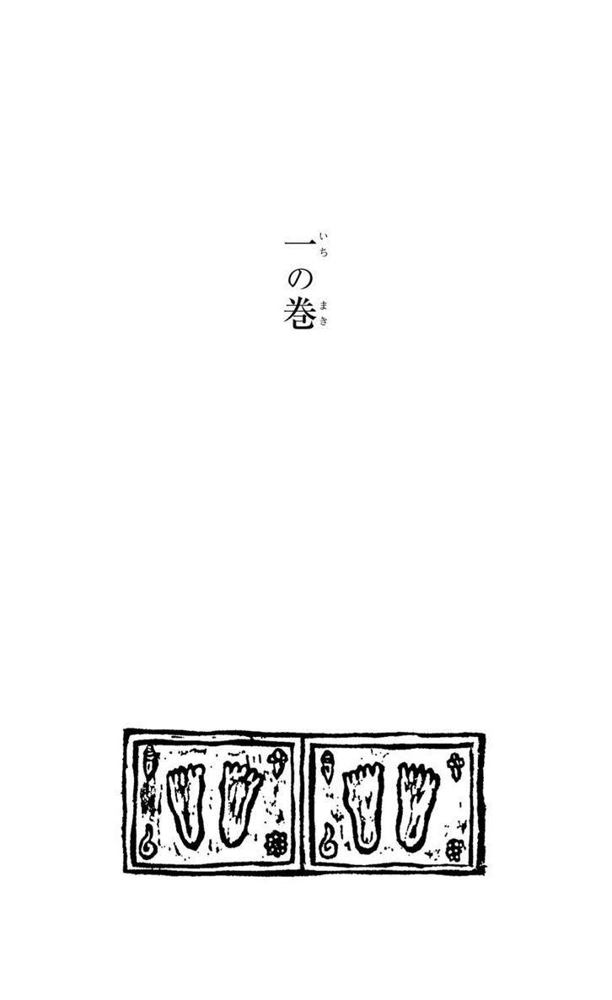
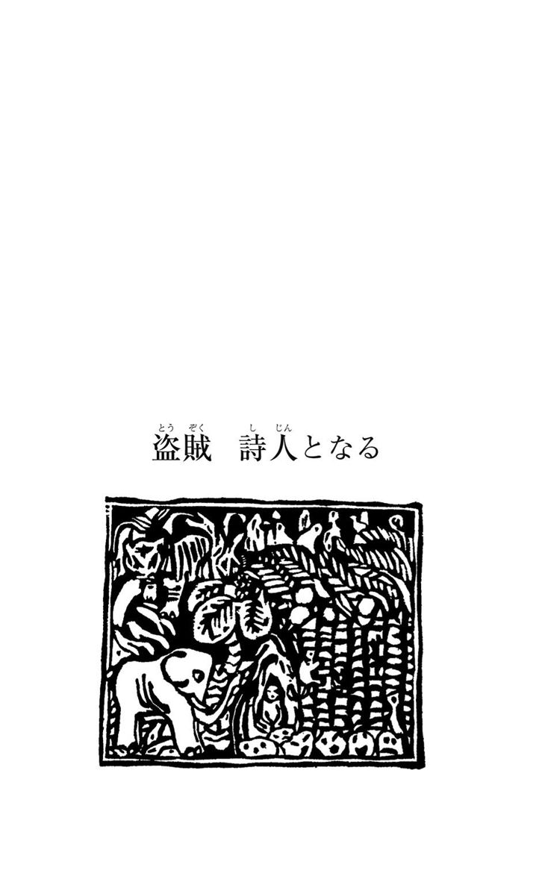
インドの大むかしの英雄で、また偉大な聖者でもあったラーマのながい歌物語りを、さて、ここで、どこからお話しいたしたらよいでしょうか。
──この詩人にして、この物語りあり、とはむかしからよくいわれていることです。まことに、きよらかな物語りは、それにもましてきよらかな詩人の心から生まれたものにちがいありません。
ところで、「ラーマーヤナ」をつくった詩人のバールミキは、最初、この物語りのようにきよらかな人ではなかったようです。いいつたえによると、バールミキは詩人になるまえは盗賊でした。──おかしな話ですが、まあ、おききなさい！
とおいむかしの大むかしのこと、インドのあるジャングルで、とおりがかりの旅人をおそい、それで暮らしをたてていたラトナーカルというおいはぎがありました。たいへんおそろしい盗賊だったので、人はもちろん、猛獣さえもおそれをなしていました。
勇敢なことといったら、おののひとうちで虎を切りころし、剣をただひとふりふるだけで象の牙さえ切りおとしてしまいます。
投げ矢が上手だったので、どんなすばしっこいひょうも、ねらわれたら最後、もうのがれることはできません。猛獣のどんなかたい皮でもつき破り、きっと急所をさしてころしてしまいます。
盗賊のラトナーカルは、このように動物や鳥や人間をすこしもおそれることなく、ジャングルのなかにすんでいました。
ラトナーカルは商人ばかりではなく、王さまからさえ奪いとりました。だれであろうと道をとおりかかれば、かまったことはありません。だれからでも奪いとるというのが、たいへんな自慢でした。
けれども、読むことや書くことやうたうことは、なにひとつできませんでした。心はねむり、魂はほろびていたので、聖者や巡礼などはお金をもっていないということさえしらず、こわい顔をしてただもう奪いとることばかり考えていたのです。
ある日のこと、聖者のなかでいちばん偉いナーラダという聖者が、歌をうたいながらこのジャングルにさしかかりました。ラトナーカルはその歌ごえをきくと、いきなり聖者にとびかかり、大ごえで叫びました。
「とまれ！ ここをとおるなら、お金か命か、どっちかおいていけ！」
まっ白な髪の毛をした聖者は、すこしもおそれずにこたえました。
「おや、おそろしい顔をしているね。黒いひげがまるで胡蜂の巣のようだ。罪とがもない旅人を苦しめて、なにが面白いのかい？」
「おもしろい？ おれはもうけたいんだ。おれはラトナーカルという名前だが、この名前は宝石の山ということなんだぞ。王さまや隊商や商人から奪いとって、おれはお金持ちになりたいんだ。さあ、わかったら、命かお金か、どっちかよこせ！」
「とんでもない」
と、ナーラダ聖者はおちついていいました。
「わしは聖者じゃ、お金などもってはいない。ビシヌの神をありありと拝んでからは、神さまのことを説いてあるいているのじゃ」
「お金がないって？ おまえはいったい、どういう人間なんだ」
ラトナーカルがうたがい深くたずねると、聖者はこういいました。
「欲深な眼をしているね。おまえは聖者にあったことがないのかい。わしは聖者のひとりで、至上の神ビシヌになん年もなん年もお祈りをささげたおかげで、神さまはわしを不死のからだにしてくださり、お金はなくても生きていける勇気をおあたえくださったのじゃ。わしのもっているのは命だけじゃが、とりたければ、さあ、とっていくがよい」
ラトナーカルは、このとき、はっとしたのです。これはかなわぬ、とはじめて思いました。
「神さまがあなたを不死のからだになさったのなら、どうして、わたしのようなものがあなたの命をとることができましょう」
「泥棒さん、そのとおりじゃ」
と、聖者はにっこり笑っていいました。
「まことにお気の毒だが、神さまはわしの命さえもおまえにあげられないほど、わしを貧乏人になさったのだ。ほんとにわしは、おまえさんによびとめられるような値うちのある人間ではないのだよ」
「そんならなおさら、ここをとおすことはできない」
ラトナーカルはうなるようなこえをだしていいました。
「神さまがあなたを不死のからだにし、なにもなくても生きていける勇気をあたえくださったのなら、わたしもそのような力を、どうしたら神さまから奪いとることができるか、どうかおしえてください。わたしも不死のからだになりたいものだ。これこそ宝のなかでいちばん貴い宝というものです」
「不死を買いたいといっても、よいかな、ずいぶん値がたかいのじゃ」
と、ナーラダ聖者はいいました。
「どんなにたかくったって、かまうものか！」
ラトナーカルは雷のようなこえをだしました。
「わたしをずるい商人だとおっしゃるんですか。それともりっぱな盗賊だとでもお考えになるんですか。お望みだけのお金は、きっとおはらいします」
「よろしい、では取り引きするとしよう」
と、聖者はこたえました。
「よくききなさい。ほんとうのことをおしえてあげよう。
──わしはこういう噂をきいたのだが、なんでも、頭が十あって、手が二十本もあるという、あのおそろしい悪魔のラーバナが、ランカ（いまのセイロン島）にあらわれたということじゃ。たいそうつよいやつなので、大かたの神がみをひき捕え、神がみを支配する大神のインドラさえどれいにしてしまったそうじゃ。
なん百年ものあいだ、神がみはランカで悪魔につかえてきたが、とうとう苦しさのあまり、至上の神ビシヌに、どうかこの世に再来してくださいとお祈りをつづけた。
神のおしえによると──善人がやぶれ、悪人が勝つようなときには、いつでも至上の神は人間のすがたになって、正しい世のなかにするために再来なさる──といういいつたえがあるので、神がみは
『ビシヌの神よ......ときはきたれり』
と、お祈りをあげたのじゃ。
とらわれた神がみの祈りは、まもなく上天にききとどけられるだろう。そこで、おまえに命令するのだが、この命令にさえしたがえば、おまえの願いもかなうのだ。おまえは泥棒だが、これから、ひとり広野へいくがよい。そこで祈りをあげ、黙想をしなさい。黙想しているうちに、いつかすわったままで、神の再来をみ、神のたたかうのをみるだろう。
おまえのみたことを不滅の歌につくるがよい。人びとは幾時代にわたって、その歌を読みうたうことだろう。そうなれば、おまえも不死の人となるのじゃ」
「でも......」
と、盗賊は口ごもっていいました。
「読むことも、書くこともできないわたしが、どうして物語りなどをつくることができましょう？」
「祈りをあげ、黙想をつづけるがよい」
ナーラダは最後にこういいました。
「そうしているうちに、しりたいと思うことは、なんでもしぜんとわかるようになるじゃろう」
こういったとたん、聖者はラトナーカルのまえから、幻のようにかき消えました。なるほど、やっぱり聖者だったんだな、と盗賊は思いました。あのナーラダ聖者のほかには、幻のようにすがたを消す変化の術をしっているものは、だれひとりなかったからです。
聖者がほんとうのことを話してくれたのだ、とわかったので、ラトナーカルはこのときから山賊の悪の道をきっぱりすてました。そうして、聖なるガンジス河の岸辺をさまよいあるいてから、どさりとあぐらをかいて、黙想にふけりました。
ときがたって太陽がしずみ、虎がジャングルをうろつきながらうなったり、象のむれがすぐそばをとおっても、ラトナーカルはおそれることなく夢中になって祈りをあげ、黙想をつづけていました。
夜がすぎ昼となり、昼からまた夜がかさなりました。こうして一日一日がすぎて一年、二年となり、一年一年はかさなって、十年、二十年とたつうちに、ありがやってきて、盗賊の黙想のじゃまにならないように、あり塚をつくって、ラトナーカルの身をいつかつつんでしまい、いつのまにか、ラトナーカルもすっかりあり塚のひとかたまりの土になってしまいました。
ついにある日のこと、ラトナーカルは偉大な霊感をえました。神がラーマという人間のすがたになって再来したのをみたのです。心に再来の神をありありとみたので、ラトナーカルはながい黙想から立ちあがりました。するとあり塚はぼろぼろとくずれおちました。かれは自分の身をながめて、叫んだのです。
「おれはバールミキだ！ あり塚にかくれていた男だ」
これで、わたくしたちは今日でも、かれの名前をしっているわけなのです。
さて、ここでバールミキとなったラトナーカルは、きよらかな河で沐浴し、きよらかな水を水がめにいれて、ジャングルさしてあるきだしました。すると、ふと、そこのマンゴーの木をみると、二羽のさぎがなかよく枝のうえにとまっています。
なかよくならんでさえずっているのを目にすると、ふと黙想のあいだにみたラーマとその花嫁とのむつまじいすがたを思いだしました。バールミキはうっとりとなって鳥どものすがたにみとれていました。
──すると、このとき、一本の矢が風をきって一羽のさぎにあたりました。鳥は悲鳴をあげて地におち、たちまち死んでしまいました。助かったほうのさぎは空に舞いあがって悲しいこえで泣き叫んでいます。
バールミキは空へとんだ鳥から目をはなすと、死んだ鳥を土のうえに探しはじめました。すると、そこへ矢をはなった猟師がやってきて、あわれな鳥を袋のなかにいれようとしました。
この下手人の猟師をみると、バールミキはものすごい顔をしてどなりながら、思わずのろいのことばを、猟師にあびせました。
「よくもころしたな。鳥だってなかよく夢中になっていなかったら、おまえのすがたをきっとみたはずだ。あんなにさえずりよろこんでいた鳥を、おまえはころしたんだ。いまのろいをかけてやる！ こんな卑怯なことをしたんだから、おまえはもうこの世で、けっして出世することはできないぞ！」
バールミキはしゃがんで、死んだ鳥が生きかえるようにと、水がめのなかのガンジス河の水をかけてやりました。すると、鳥はたちまち生きかえって、よろこび舞いあがり、もう一羽のなかよしのほうへとんでいきました。バールミキはにっこりして鳥のすがたを目でおっていると、そばでしょんぼりしている猟師がかわいそうになって、こうさとしました。
「もういいから、いくがよい。おまえもまた永久に名がのこることだろう。人がラーマの物語りをきくたびに、いつもおまえのこともきくにちがいない。
それで、おまえも有名になる。奇妙なことだが、おまえがああいうことをしたおかげで、わたくしの口もほぐれたのだ。鳥どもの悲しみをみて、わたくしはやっと歌の秘訣がわかったのだよ」
こうして、「ラーマーヤナ」という歌物語りが、はじめてできかけたのです。バールミキの口をほぐして、最初の歌をうたわせたのは、こうした思いがけない事件のおかげでした。
このような事件というものは、しばしば偉大な物語りをつくるきっかけとなるのです。いつの世にも、いとしいものの哀しみは、詩人が歌をつくる動機となるのです。
バールミキはジャングルのそばのいおりで、この歌物語りをつくりました。すると、インドの各地から、少年少女があつまってきて、「ラーマーヤナ」のうたい方を教わりました。みんなは、はじめことばの音と調子をおぼえ、それからことばのなかにふくまれている深い意味をもしるようになりました。
やがて、銀の絃をかきならし、太鼓をうちながら、ラーマのいさましい物語りをうたうことを教わりました。ことばづかいが上手になり、こえもよくなると、吟誦詩人となって、宮廷や市場や、村里の農夫があつまる麦打ち場などにでかけました。
そこで、悪魔のラーバナからこの世界をすくったラーマの雄々しさと、ラーマの妻シータの気高さとをほめたたえました。
バールミキがつくったそもそものはじめからいまにかけて、「ラーマーヤナ」というラーマの物語りは、吟誦詩人の口をとおして、インドにすむ、すべての人びとにゆきわたったのです。バールミキのいちばんはじめの弟子は、ほかならぬラーマの息子たちでした。息子たちは物語りをひろめながらつぎからつぎへと子々孫々におしえました。
「ラーマーヤナ」は、こうしてラーマの血筋をとおして、今日のインドの吟誦詩人にまでつたわったのです。いまでもインドでは、ほんの一部の人がラーマーヤナの本を読みますが、大かたの人は吟誦詩人の語るのを、うっとりとなってきいています。吟誦詩人たちは、みんないちように、自分をバールミキにして、こんなふうにうたいだすのです。
──わたくしがなん百年ものあいだ、あり塚のほかにはなにひとつ身につけず黙想にふけっていますと、ある日のこと、突然、神さまがわたくしの心の眼をあけてくださいました。そこでわたしくは天国の入口からのぞきますと、インドラの神にひきいられた神がみが、至上の神ビシヌにむかって、頭が十もあるランカの魔王ラーバナのどれいとなっているこの身をおすくいくださいと、お願いしていました。
神がみはなん千年もそのままお願いしつづけました。ついにビシヌの神は、その熱心なのをおくみとりになり、はすの花のようなお目をぱっちりひらいて、こうおこたえになりました。
「神がみよ、みなさんはずいぶん苦労なさったのだから、悪魔の責苦からいまといてあげましょう。どの神もどの人神も、ひとりとしてラーバナをほろぼすことができないのは、ラーバナがあらゆる秘術をしっているからです。
かれの国をほろぼすには、わたくしがまず人間となって生まれかわらなければなりません。ラーバナは人間を馬鹿にしているから、人間の心はどんなものかすこしもしりません。
また猿のような人間にちかい動物のこともしりません。ですから、ラーバナが馬鹿にしきっているものに、わたくしたちはすがたをかえましょう。
ラーバナや、その家来の悪魔や小びとや巨人の息のねをとめるには、まず大軍をおこさなければなりません。あなたがたは猿に生まれかわって、その大軍になりなさい。わたくしはラーマという人間に生まれかわって、ラーバナにまっ先に立ちむかいましょう。
ところで、このことをしっておかなければなりません。わたくしたちがひとたび人間や猿に生まれかわったら、天国でこんな相談をしたことなど、すっかり忘れてしまっているということです。わたくしたちがいっしょにあうのは、人間のようにふとした偶然によることになりましょう。
わたくしたちは運よくあえることでしょうし、猿となるみなさんは、りっぱな、いさましい軍人になっていることでしょう。わたくしは知恵のある人間となって、みなさんをひきいてランカを攻め、きっと勝ってみせます。
いまから下界にすすみなさい。南インドのジャングルへいったら、そこにすんでいる猿やしょうじょうの子に生まれかわりなさい。それでは、ごきげんよう！」
──まもなく、南インドのジャングルにすむ猿の母親たちは、りこうなこどもをたくさん生みました。こどもたちはうつくしかったばかりでなく、思いもおよばないほど勇敢でした。
そのなかで、青い丘のように大きく、いなずまにかがやく雲よりもうつくしく生まれついたバーリという猿がありました。この猿こそ、生まれかわったインドラの神でした。
その弟のスグリーバは雪をいただいた峰のようにりっぱで、もとは太陽の神だったのですが、いまでは枝から枝へとびまわっていました。
りっぱなこの二匹の猿のつぎに生まれたのは、しょうじょうのハニュマーンでした。かれはもとパバーナといって風と嵐の神でした。ハニュマーンは猿のすがたとなっても、鉄よりも決心がかたく、しかもなかなか機敏で、はっきりした頭をもっていました。
知恵の神から生まれかわったジャンバーンは、からだの半分が猿で、半分が熊となって生まれかわりました。猿のように浅知恵で、熊のようにのろまで、両方のすがたをして、もとの身分をかくしていたのでしょう。
そのあとにつづいて生まれた神がみは、人間にちかい猿のすがたをしていましたが、その数はだんだん多くなり、森の木の葉よりもたくさんになりました。
だれもかれも思いおよばない強い力と、神通力とをさずかっていました。もともと神であったので、ねずみのように小さくなることも、山のように大きくなることも思いのままでした。
大小まちまちでしたが、どの猿もライオンのように誇りたかく、ひょうのようにすばしっこく、遊び半分に岩をくだき、丘をまりのように投げあいます。
爪や歯は剣よりするどく、人が煉瓦をはこぶように、大きな山をうごかしました。こどもが草を折るように、たかい木をも手のなかでつぶしてしまいます。
いやはや、たいへんないたずらものぞろいで、河の神もかんかんに腹を立てたほどでした。こうして猿の大軍は、ランカの魔王ラーバナには気づかれず、いろいろの教練をつんでかがやかしい軍隊となりました。
こうしているあいだに、いっぽうではコサラ国（北インド）の都アヨージャのダサラタ王の宮殿で、三人のお妃が四人の王子を生みました。一番うえの王子をラーマといい、これこそビシヌの神の生まれかわりだったのです。
ラーマの母君はこころ正しいカウサルヤー妃で、二番目の王子バーラタの母は悪がしこいカイケイー妃、ふたごの王子ラクシマナとサトルウグナの母は心やさしいスウミトラ妃でありました。生まれたときから、ラクシマナは物にまといつく影のようにラーマになつき、サトルウグナはバーラタになついていました。
四人の王子はそろって、めきめき大きくなりました。
ラーマはどうしてダサラタ王の宮殿に生まれたのでしょうか──それはダサラタ王がなかなかの名君で、心きよらかな徳のあるかたであり、国民からも、うやまわれていたからです。ビシヌの神は国王の気高いりっぱな心をよろこばれて、ご自分の父となさったのです。
けれどもダサラタ王にはもともとひとつのたたりがありました。これはいずれお話をすすめ、事件がつぎつぎとかさなるにつれて明らかにいたしましょう。
それに、ダサラタ王には三人の妃があったので、このことからもたたりがおこり、運命の手につかまれ、人形のようにもてあそばれたのです。このことも、やがてあとでお話しいたします。
ラーマは三人の王子といっしょに大きくなりました。いまではもう神さまではなく、ひとりの小さい人間なのですから、夜となく昼となく、あれが欲しい、これが欲しいとだだをこねました。
神さまでいたころは心安らかでいたものの、もう人間となってみれば、悲しいことに心はいらだつばかりです。五歳になったラーマは、ある夕暮れのこと、カウサルヤー妃のひざにだかれていました。宮殿の屋上で、いつか日の暮れるのを、ひっそりと眺めていたのです。
まもなく星がきらきらとかがやきはじめ、月もぐいぐいとのぼってきました。ラーマはこどもだったので、だいだいいろのまりのような月を欲しがりました。
「おかあちゃま、あの青い木になっているくだものをとってください。あれをおもちゃにして遊びたいな」
お妃はラーマのわがままをかわいく思いましたが、それでもたいそうびっくりしました。女王さまでも、やはり悲しいことに人間です。どうしてたかい空の月のところへなんか、のぼってゆけましょう！ ラーマはせがんでしかたがありません。
「お月さまを取ってよう──」
ラーマはおこって、わあわあ泣きだしました。
カウサルヤー妃は、ラーマがかんしゃくをおこして、いつまでも泣きやまないので、ほとほとこまってしまいました。ラーマをなだめすかすことができないので、お妃は国王をむかえにやりました。
ダサラタ王も王さまではありましたが、やはり王子のわがままを満足させることは、なんとしてもできません。
「お月さまを取ってよう──」
ラーマは小さい足をばたばたさせて、カウサルヤー妃のひざで泣きわめきました。国王もこまってしまい、宮殿の天文学者をよびにやりました。
「どうか、王子に空の月を取ってやってください」
国王はそうおたのみになりました。すると、王宮の天文学者で、顧問で、教授でもあり、えらい学者であったバシシタは、白いひげをしごきながら、着物の下からこっそり鏡をとりだしました。
鏡をしずかにラーマの手にもたせ、その使い方をゆっくりおしえて、どうやらまりのような月を鏡に反射させてうつしてやりました。鏡のなかの月をみると、ラーマはきいきいいってよろこびました。これでやっと、夜の神を手でつかむことができたのです！
ラーマは大よろこびでしたが、まもなくすやすやとねむってしまいました。
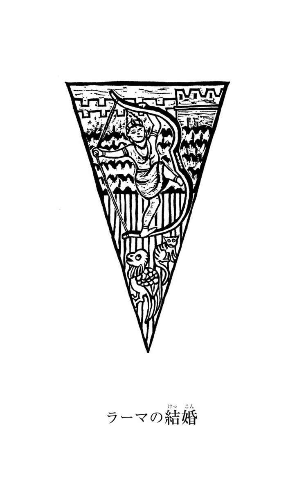
十六歳になるまで、ラーマと、そのほか三人の王子、ラクシマナ、バーラタ、サトルウグナは、そろって弓術、剣術、棒術、柔術をならいましたので、みんなからだはめきめき強くなりました。
学問のほうでは音楽や武勇談や修身などを教わりました。十六歳になるころには、どの王子もひとかどの達人となりました。
ラーマとラクシマナがはじめて冒険にでかけたのは、ちょうどこのころのことです。
──ある日のこと、王子たちがダサラタ王の宮廷で、父王の政治のしかたをまなんでいると、そこへ聖者らしい老人が、白い雲のようにふわりとはいってきました。
「わたくしはビスバーミトラというものです。かつては国王のひとりでしたが、ずっと以前に王者の生活をすてて、神をもとめてつかえているものです。はげしい苦行とおつとめのおかげで、どうやら真理がわかりかけてきました。
そこで、ジャングルにいおりをむすび、若いものたちに黙想のしかたをおしえています。白檀の木でご神火をたき、油をそそいでほのおをたやしたことがありません。
ご神火のまわりにすわって黙想をしていると、弟子のなかには、わたくしが神をみるように、神のみすがたをみるようになるものもあらわれてきました」
「賢者よ」
と、ダサラタ王は立ちあがってこたえました。
「よくおいでになりました。わたくしは俗界の国王です。この世を支配するわたくしたち国王は、永遠の神をもとめておつかえするあなたのようなかたがたをうやまっております。
黄金の城壁と宝石の富でかこまれたこの都も、あなたがたには足もとのちりのようなものでございましょう。お望みのものがあるなら、なんでもおっしゃってください」
「まあ、おかけになってください。王さま」
ビスバーミトラはこういってから、王宮を祝福しました。国王や王子や、廷臣たちが腰かけると、聖者はいいました。
「いま、王さまは望みものはなんでもくださる、とおっしゃいましたね。では、ふたりの王子、ラーマとラクシマナとをくださいませんか」
「妙なお望みですね。ふたりに黙想をおしえてくださるというわけですか」
国王のおたずねに、ビスバーミトラはこたえました。
「実は、わたくしにかわってふたりの王子にたたかっていただきたいのです。わたくしのいおりはときおりふたりの悪魔とその手下どもに、乱暴されてこまっているのです。その悪魔の名はタータカと、その息子のマーリーチャというものです。
母親のタータカはたいへん醜い顔をしていて、人間のすがたをしておりますが、象のように大きく、蛇のように執念深いやつで、息子のほうもこれにおとらず悪いやつで、手下どもといっしょになって、わたくしをいおりから追いだそうとしているのです。ご神火に血をながして火を消したり、白檀のまきに、たべのこりの骨やなにかを投げてきてしかたがありません。
もう、こうなっては、ジャングルにすむことも、おつとめをつづけることもできなくなりました。ラーマとラクシマナとを、どうか、かしてください。おふたりの勇気と武芸で悪魔を退治し、悪魔におびやかされているわたくしのいおりを、どうかすくっていただきたいのです」
宮廷は一時にしんとしずまりかえりました。だれもかれも、ラーマとラクシマナの運命を気づかったからです。国王はふたりの王子をたいそうかわいがっていたので、廷臣たちはビスバーミトラに、なにかほかのものにかえてくれないか、とたのみました。
「まだ年端もいかない王子たちを、どうかつれていかないでください。ひとすじなわではいかないタータカや、その手下どもとたたかったら、王子たちはきっと傷つくことでしょう。
貴い賢者よ。どうか、王子たちをつれていくことだけはかんべんしてください」
「わたくしはダサラタ王にお話しもうしているのですぞ。まさか小石のようにちっぽけな王国の王さまを相手にお話ししているわけではありますまい」
聖者は腹を立てました。
「王さまがはじめおっしゃった約束を守らないというのなら、よろしい──わたくしは世界じゅうにむかって、ダサラタ王は王さまらしくもなく約束をふみにじった、と発表しますぞ」
このとき、ラーマは父の国王がこまっているのをしり、すっくと立ちあがっていいました。
「父上、ひとこといわせてください。貴い賢者よ。わたくしとラクシマナとで、きっと悪魔に勝ってみせましょう。弟といっしょに、あなたのおっしゃる森へよろこんでまいりましょう。
父上は約束なさいました。約束なさったからには、象が牙を口のなかにひっこめることができないように、もうひっこめることはできません。父上、どうかわたくしたちを、この聖者といっしょにやってください。弓術や剣術の腕前をためしてみとうございます」
ラクシマナも立ちあがって、光にそう影のようにラーマとならんで、ダサラタ王に熱心にお願いしました。
「それほどまでにいうのなら、いくがよい」
と、国王はいいました。
「おまえたちは勇気があってりっぱな人間だからこそ、そういうことができるのだ。わたくしは心ではうれしく思っている。わが祖先の天上の神がみも、おまえたちのりっぱなことばをおききになって、さぞかしおよろこびになっているにちがいない。ビスバーミトラ聖者、それでは、わたくしのだいじな王子、ラーマとラクシマナとをよろしくおたのみいたします」
ふたりの王子は、母のお妃や兄弟のバーラタやサトルウグナにわかれをつげ、ビスバーミトラにつれられて出発しました。
聖者は武器らしいものをなにももちませんでしたが、王子たちはりっぱな武器に身をかため、顔にはりりしい決心のほどがありありとうかがえました。
一行はまず東にむかい、それから南にむかい、ガンジス河をわたりました。聖者はきよらかな水で沐浴し、日没にガヤトリというお経をとなえるようにといいました。三人は沐浴をすませてから、黙想をして、お祈りをしました。
むかしもいまも この先も
永遠にかわらず 天照らす
日の神よ！ 光の神よ
われらが心を照らしたまえ
ああ 神よ
われらをうそからまことへ
やみから光へ
死から不死へと みちびきたまえ
あたりがまっ暗になってから、三人はやっと黙想から立ちあがりました。王子たちはたいへん上手にお祈りしたので、聖者はよろこんでいいました。
「ラーマ、お祈りがたいへん上手ですね。ラクシマナもほんとに信心深い。ふたりともきよらかな心をもっているから、まだしらない術をさずけてあげよう。ラーマ、ラクシマナ、ふたりの心はこの先も、いまのように純潔をうしなうことはあるまい。
ところで、ビタとアビタというふたつのご祈とうをしっていますか。ひとつは飢えをすくい、もうひとつは喉のかわきをすくってくれます。このふたつのご祈とうは、ふたりのからだをすくってくれるにちがいない」
と、このとき、聖者がこういいおわるかおわらぬうちに、すぐそばのジャングルから、三人の耳をつきさすような、おそろしい物音がきこえてきました。それは悪魔のタータカやマーリーチャや、ものすごいその家来たちが、浮かれて大さわぎをしている物音でした。
ラーマとラクシマナはすぐ弓に弦をはり、悪魔たちが攻めよせてくるかとまちかまえていましたが、その夜はなにごともなくすぎました。
あくる朝、三人はガンジス河で沐浴をし、お祈りをすませると、ジャングルのなかに、はいっていきました。途中までくると、いきなり骨や肉の切れなどを投げつけられました。あッ、これはタータカどものしわざにちがいない、とわかったので、ラーマとラクシマナは弓をひきました。
ラーマは火の矢をはなちました。火の矢はたちまち悪魔の凶悪な魔法をはらいのけてしまいました。象のように大きな女のタータカは、ほのおのようにもえあがる髪をふりみだして、おどりかかってきました。ラーマはタータカめがけて雨のように矢を射ると、いっぽうでは、ラクシマナが家来どもをふせぎました。
タータカは山火事のようにもえあがって、身にふれるものを焼きつくそうとしました。ラーマの矢はまずタータカの両腕を切り、両耳や鼻までも切りおとしたのですが、タータカはすこしもひるみません。どろどろにとけた熱い鉄のながれのようになって、なおも、おどりかかってきます。
とうとうラーマは、ブラーマの神の刃といわれているいちばん大切にしていた矢をはなちました。弓の弦は、わんわんむらがる数しれぬ蜂の巣のように、ものすごいうなりをあげました。矢は最後の運命を決するように、ぴゅうッと空をきってとびました。
タータカは身をかくそうとして、鼻のあなから煙をもくもく吐きだしましたが、なんの役にもたちません。神の刃といわれる矢は、タータカの喉をつきとおし、そのはずみに、タータカのからだはとびあがりました。タータカの断末魔の叫びごえが、ものおそろしくきこえてきました。
タータカが最期の息をひきとると、その子の、丘のように大きなマーリーチャは、いかり狂ってラーマにとびかかりました。もう弓をひくひまもありません。ラーマは大おのをふるって敵に立ちむかい、ざくりと相手の胸に切りつけました。
マーリーチャはおそろしいうめきごえをあげて、どっとたおれました。マーリーチャの下敷きとなった木などは、その重さで紙のようにぺちゃんこに平たくなってしまい、死体のために森が半分も消えて、数しれぬ虎や象がその腕の下敷きとなってうずめられたほどです。
このあいだに、ラクシマナもほかの悪魔を退治してしまいました。──ふたりの王子はやっと武器をふききよめ、さやにおさめました。ビスバーミトラは大よろこびで王子たちにいいました。
「ほら、ほら、とおいむこうのほうから話しごえがきこえるでしょう。あれは、いまタータカやマーリーチャからすくわれた隠者たちが、おふたりにお礼をいっているところです。どうかわたくしのいおりへおいでなさい。弟子たちはみんなよろこんで、おふたりにおつかえするにちがいない」
王子たちは、その日一日じゅう、ビスバーミトラの一団といっしょにすごしました。よく朝、夜が明けてから、ガヤトリというお経をとなえ、朝のお祈りがすむと、ビスバーミトラはいさましいふたりの王子にむかっていいました。
「勇士たちよ。おふたりは弱いもののために、王者にふさわしいつとめをりっぱにはたされた。まことにみあげたものだ。いまこそ兵法の極意を伝授することにいたそう。しかしそれには、まずもっておのれを制することをしらなければならぬのじゃ。
それというのも、おのれを制することのできるものこそ、全世界をも制することができるからじゃ。まずことばからつつしみなさい」
ラーマとラクシマナはふたりとも、ことばをつつしみ、おのれを制するとちかいました。
そこで、ビスバーミトラは「復しゅうの矢」の極意をふたりにさずけました。矢の鉄の質や、矢軸のながさなどをおしえたのです。この矢は天の蛇、あのいなずまのようにものすごいものなのです。そのつぎに、裁判の投げなわという極意をさずけました。
もし、ある男がどこかで悪いことをしても、この投げなわをもっている王さまのまえにでると、いやでも白状するようになるのです。
どんな人でも、このなわの輪からのがれることはできません。このなわは夜となく昼となくながれ、目にみえる世界ばかりでなく、目にみえない世界までもながれてゆきます。地下をながれる水のように休みなくながれて、悪いことをしたものが、たとえどこにいようとも、みつけてしばってしまうのです。
裁判の投げなわのつぎに、聖者は運命の槍という武器を王子たちにあたえました。それから、死の神のたいまつといって、あかあかともえている二本の棒をくれました。そのうえ、神がみの武器をみんなさずけてくれました。
それはブラーマの神の知恵とか、シバの神の投げ槍とか、風の神の矢筒とかいったものでした。聖者はまだそのほか、星の武器である雨をふらせる術とか、月の魔法などもさずけました。
そこでふたりの王子は矢と投げ槍の武器のほかに、ありとあらゆる魔法を教わったのです。
ビスバーミトラが王子たちに、かずかずの武器の極意をおしえていると、そこへ弟子のひとりがかけこんできていいました。
──ミシラーのジャナカ王が、王女シータの花婿をえらぶために、ハラダヌという大きな神弓をまげさせるお祭りのもよおしがあるというのです。聖者はこのしらせをきくと、はっと思いあたったことでもあったのでしょう、にっこり笑いながらいいました。
「ラーマよ。これはさい先のよいことじゃ。ミシラーの王には、シータといって、それはうつくしい王女がいる。シータが十五歳をすぎてから今日まで、インドの各地の王子がなん人となくやってきたが、だれひとりとしてシータの心にかなったものはなかった。それというのも、父王のもっているあのおそろしい神弓をだれもまげることができなかったからじゃ。
──この娘はハラダヌの神弓をまげた若ものの妃となるであろう──こう国王はいっている。
この神弓はシバの神のおそるべき武器で、死神の弦をはった、ほろびることのない弓なのじゃ。これまでも、お祭りのたびにいくたびもためしたけれど、どの王子たちも、いや神でさえまげることができなかった。
若ものよ、いまこそわしがつれて、シータのためにもよおされるお祭りにいこう」
そこで、ふたりの王子はビスバーミトラにつれられて、ミシラーさしてでかけました。ジャングルをよこぎって四日ばかりいくと、とおいかなたにミシラーの都がみえました。城壁が青空にくっきりとそびえたっています。あまりのうつくしさに、王子も聖者もしばらく立ちどまってみとれていました。
やがて都についてみると、もう夜でした。三人は街のうつくしさや、たくさんの象や各国の国王などをみてびっくりしました。ラーマもラクシマナも聖者のおともをしてあるいてゆきましたが、道ゆく人びとは、そのりっぱなすがたをみて、これはひょっとすると王子さまより偉い王たちかもしれないとささやきました。
ジャナカ王の宮殿の門のまえで、ビスバーミトラはふたりの王子の身分をのべました。
すると、黄金いろの大きな三つの門がさっとひらいて、三人はジャナカ王のまえにみちびかれました。
なんというすばらしい光景でしょう。みごとな宝石をちりばめた、たかい丸天井、ぴかぴか光る大理石の御殿、そのなかにジャナカ王がすわっていて、そのそばでうつくしいシータと妹のウルミーラがなにか話をしていました。シータがラーマをちらりとみた瞬間、ラーマは思わずはっとして立ちどまりました。
まえにどこか──天国の都ででもみかけたことがあったのでしょうか。いいえ、そうではありません。ラーマは自分の半身がラーマとなって生まれかわり、もうひとつの半身がミシラー国王の王女シータとなって生まれかわっていたことを、すこしもしらなかったのです。シータはもともとラーマと一体の神だったのです。
シータのいいようもないうつくしさに、ラーマがはっとしたのは、このためでした。けれども、いまでは人間に生まれかわっていたので、ラーマはこの神秘なことがわかりません。
ラーマが目のあたりにみたのは、これまでだれひとりみたこともないような、それはうつくしいひとりの娘でした。シータもまたラーマをみたとき、おなじような不思議さにうたれたのです。なんという霊妙なことでしょう。ラーマを世にもめずらしい勇者だと思ったばかりでなく、なんという神ごうしいかただろうと思いました。
あたりにはエメラルドいろのともしびがぼんやりともっていました。
この夜、ふたりの王子とビスバーミトラは、ジャナカ王の宮殿の一室ですごしました。よく朝、三人は都の町まちのかどでならされる笛の音をきいて、深いねむりからさめました。この明けがたに笛をならす古い習慣は、いまでもインドの古い町まちにのこっています。
町の人たちは荒あらしい、いやな物音や叫びごえで目がさめるのではなく、うつくしい音色でおきるのです。するどい、がさがさした物音で目がさめたりしたら、人の心はびっくりして、精神は狂ってしまいます。
三人はお祈りをとなえ、朝のご飯がすむと、お祭りをみに国王の館にまねかれました。
宮殿の外苑では、世界じゅうの王子たちがあつまっていました。腰にさげた剣や、ターバンをとめたボタンの宝石がきらきら光って、見物の人たちの目をさしました。
王子たちの着たさくらいろや、白や、青や、紫などのいろとりどりの着物がならぶと、それはうつくしいいろどりの模様のようにみえました。人びとはみんな神の弓ハラダヌをみようと、いまかいまかとまちながら立ちつくしています。
ところが、まずジャナカ王があらわれるものと思っていたところ、空にうかんだ夏雲のようにふわりとあらわれたのは、気高くうつくしいシータでした。シータのうつくしさに、いならぶ王子たちは刃につきさされたようにはっとしました。
シータはこのうえなくうつくしかったけれども、また気高いすがたをしていて、まずしいものの小屋をも金持ちの豪華な家とおなじようにかがやき照らす、あの月のようにみえました。
ジャナカ王は式場につくられた玉座にのぼりました。国王が宮殿の戸口にあいずをすると、さっと扉がひらかれました。そこにはたくさんの廷臣たちが、大きな弓の重さにたえかねて、まるでありのようによりかたまっていました。
なんとも、かんとも重かったのでしょう。八台の荷車にのせてひっぱってきたのですから、むりもありません。廷臣たちはうんうんあえぎながら、玉座の階までやっとこさと運びました。
すると、ジャナカ王は母親がこどもをだきあげるように、かるがると、とりあげました。あつまった若い王子や国王はこれをみて、あっとばかりに賛嘆のこえをあげました。
ジャナカ王は銀いろの髪をふりたてていいました。
「この神の弓をまげたかたに、シータを花嫁としてさしあげます。シバの神は力と勇気をためすために、この弓をわたくしの祖先にくださったのです。わたくしたちのからだには、無双の力をもつ血がながれています。
この弓をもちあげて、弦をはるかたはありませんか。ハラダヌの弓をまげる勇者がいるならば、そのかたこそ、いまわたくしのそばにいる王女シータの花婿にふさわしいかたです」
ひとりの王子が自分にそれだけの力がないとはしらず、つかつかとすすみでましたが、なんという恥をかいたことでしょう！ ジャナカ王が弓を手からはなした瞬間、あわれな若ものはもうすこしで弓の下敷きとなってつぶされるところでした。国王はとんでいって、弱よわしい馬鹿な王子のあぶないところをすくいました。
それから、こんど別の王子が気どってまえへすすみ、ハラダヌの弓をまげて弦をはろうとしました。弓の重さをささえるだけの力はありましたが、この王子もまげることはできません。はずかしさのあまり、その場からこそこそ逃げだすと、つづいて三番目の王子がすすみでました。この王子もまたおそろしい弓をまげることはできません。
こんなふうにして、つぎからつぎへと別の王子があらわれては、まげようとしましたが弓をすてて逃げだしました。
最後に、ラーマが玉座のまえにでました。ラーマがあるくと、そのあたりは後光がさすようにみえました。
ラーマはジャナカ王に目礼して、うやうやしくしずかに弓をうけとりました。腕をすこしもまげずに、しっかり重い弓をささえました。大きな象が古い木をまきあげるように、ラーマは弓をゆっくりもちあげました。そうして弓身のまんなかに足をかけてひっぱってから、弓をまげて弦をはりました。
弦をひいてみると、雷のような大きな音がしました。ところが、ラーマにはその大きなうなるような音も、いならぶ国王たちがびっくりして拍手するのもきこえません。なおも弓の両端をにぎって、もうひと息、まげようとしました。
力をこめて、すこしずつ大きな強い弓身をぐっとまげていって、とうとうその両端をあわせてしまいました。すると、いきなり大地もさけるような耳を聾するばかりの音がして、弓はばりばりと折れ、ラーマの足もとにころがったのです。
これで、ラーマはジャナカ王の血族とおなじような無双の力のあることがわかり、世にもうつくしい王女のシータを花嫁としてもらうことになりました。
この日、ジャナカ王はさっそく宮廷の司祭と使節にこういう手紙をもたせて、すぐアヨージャの国にさしむけました。
ラーマの父たる国王陛下
あなたの王子は、神の弓を折りまげ、シータの花婿となられました。ただちに王族と司祭とをしたがえて、王子の結婚を祝うためにおいでください！
またかさねてもうしますが、あなたの第二王子、ラクシマナとわたくしのもうひとりの王女ウルミーラとの結婚をも、おそれながらおゆるしください。
おゆるしくださるならば、このふたりも同時に結婚いたさせたいとぞんじます。
ダサラタ王はただちに万端の用意をするように命じました。そうして、国にのこっていたふたりの王子もつれ、司祭や占星師や聖歌隊をひきつれて、ミシラーの国をさして出発しました。
このあいだに、ジャナカ王は隣国の弟のクサドバージャ王をよびにやりました。クサドバージャ王は、シータとウルミーラの結婚式のときにつきそう少女として、自分のふたりの王女をつれてのりこんできました。
ところが、結婚式の席上で、三人の王さまが話しあっているうちに、ラーマのふたりの弟、バーラタとサトルウグナもこのふたりの王女とそれぞれ結婚したらどうだろう、ということになりました。そこでこの四人も結婚式をあげたのです。
一同そろって王国へかえると、アヨージャの国民は、ながい祭日をきめてお祝いしました。このお祝いのさいちゅうは、だれもかれも動物にいたるまで、おなかいっぱい、のんだりたべたりしました。
北インドのほうぼうから司祭や詩人や学者がお祝いのためにアヨージャにあつまってきて、宗教や詩や学問のことを議論しあいました。このときの話によると、学者たちは実にわかりやすく議論したので、野にいる牛にさえその議論がよくのみこめたということです。
詩人もまたすてきによい歌をうたったので、そのため空の鳥もだまってしまうほどでした。神のおしえに熱中した司祭たちは、たえまなく精進して神をたたえ、一ヵ月のお祭りのあいだ、食事をするのもわすれていたということです。
ラーマはだれからも深く愛されていました。だれもかれもラーマの結婚祝いに出席して、そのよろこびにあずかろうと、なんでもすすんでしてくれました。
その月のおわりころに、狩人のグハ王があらわれて、ジャングルでとった野じしや、黒い水牛や、大きな鹿や、さまざまなにわとりなどをもってきました。国民は車いっぱいのごちそうが、なん台もなん台もくるのをみて、もう一ヵ月祭日をのばし、グハ王も出席してまたお祝いをつづけました。
大ぜいの狩人が、自分たちのお友だちであるラーマの結婚をお祝いしようと、ジャングルの奥地から町へなだれこんできました。四人の王子は狩人たちといっしょになって、一週間にわたりすばらしい狩りをおこないました。
狩人がたかい空をとんでいる小さい点のようなわしを射とめれば、ラーマは夜なかに矢をはなちます。すると、朝には星がおちているという有様です。むかしはこのようなおどろくべき腕前を、人はもっていたのでした。
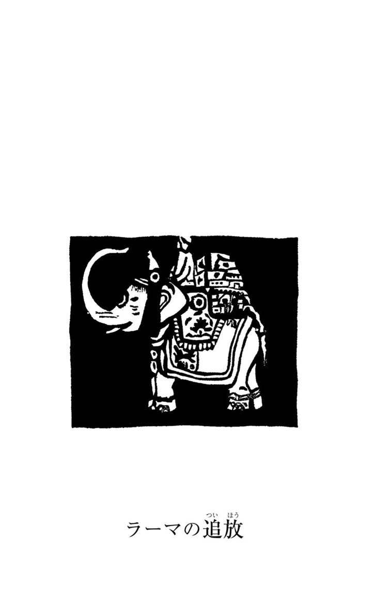
ラーマが結婚してから一年ばかりたったころ、ダサラタ王は政事から身をひく決心をしました。
──インドの聖典が命じているとおりに、浮世からはなれ、余生をささげて神につかえたいとお考えになったのです。インドの男の一生は、まず二十歳までは学問にはげみ、それから二十五年は家族をやしない育て、その後の余生は聖者や学者の仲間にはいって、神の道をおさめることになっていました。
ダサラタ王は、いまこそ僧院にしりぞき、余生をお祈りや学問や黙想にすごすときがきたのだと思いました。そこでこの決心をラーマの母、カウサルヤー妃にうちあけました。自分の息子がつぎの週には、国王になるということをきいて、カウサルヤー妃はたいそうよろこびましたが、なおも国王のことばをじっときいていました。
「この王国を四つに分けなくてもいいだろう。ほかの王子たちは、ラーマを愛しうやまっているから、大臣や顧問としてラーマによろこんでつかえるにちがいない。わたくしの考えに大臣たちも賛成で、ラーマを国王にするのが一番いいことだといっている。
みんなの望みどおり、きょうから七日目の朝、この国の王位をラーマにゆずろうと思う。ラーマはきっとこの国を、りっぱにうまくおさめることだろう。わたくしは自由の身になって、真理をきわめ、神がのこしてくださった余生をりっぱにすごそうと思う」
都ではお祝いの準備に、一週間たっぷりかかりました。竹の門が町の十字路という十字路につくられました。つる草や花でかざられたので、竹は外からはすこしもみえなくなりました。門の下には、廷臣がつめたいのみものをいれた壺と、ごちそうをもったかごをもって立っていました。
だれでもなにかたべたいと思ったら、とおりがかりの門のところで、ごちそうを分けてもらえばいいのです。旅まわりの芸人が世界のあちこちからやってきて、思いおもいに小屋をかけ、夜となく昼となく喜劇をやったり、手品をしたりしました。蛇使いや猛獣使いも、あちこちに天幕をはりました。
とおい国から使節がおくりものをもってやってきました。セイロンからは真珠を船いっぱいもってくるかと思うと、中国からはこう玉や絹や茶を、ペルシャからは陶器やめのう石やるり玉などをもってきました。ゴルゴダからは白菊のように大きなダイヤモンドを、ビルマの使節は赤いばらのように大きいルビーをもってきました。
ダサラタ王の王女の婿のエジプトのアクナトン王からは、サファイアやざくろ石やこはくや紫水晶を石こうの箱におさめてもってきました。それにはまた、人生と夢の秘密のことを書いたうつくしい本もそえられてありました。
ラーマはどこといって旅行したこともありませんでしたが、そのころのすべての文明国のようすを理解するしっかりした頭がありました。ラーマの人柄はうつくしくのびのびとしていたので、まだみたこともない民族からもたたえられていたのです。
これはちょうど蓮の花が、ぶんぶんいう蜂のことはわからなくても、蜂をひきよせることに似ています。ちょっと不思議なことですが、ラーマという名前をきいただけで、いろいろな人がしたいよってきたのです。
けれども、ラーマをどうしてもうやまわない人がふたりいました。カイケイー妃とその侍女のせむしのマンタラーとは、ラーマの力づよいりっぱなすがたをねたんでおりました。
ところが、奇妙なことにカイケイー妃の息子のバーラタ王子は、ラーマを心からうやまっていて、母のカイケイー妃に、ラーマはだれよりもりっぱな人だ、といったのですが、カイケイー妃はなかなかききいれなかったのです。
アヨージャの都が、ラーマの即位によろこびあふれていたその前夜、せむしのマンタラーはこごえでカイケイー妃にいいました。
「おうつくしいお妃さま、ダサラタ王にお願いなさいませ。ラーマ王子の即位をやめさせて、そのかわりにご子息のバーラタ王子が王位におつきになればよいではありませんか。もしもこんどラーマ王子が王さまになったら、それこそ母君のカウサルヤー妃の思いのままになるにちがいありません。ダサラタ王がご退位になって、いちばんとくをするのは、カウサルヤー妃でございます。
お妃さまは王さまの一番のお気にいりではございませんか。これはもうまちがいないことでございます。ラーマ王子がおとうさまの王位をおつぎになったら、それこそお妃さまはみじめなことになりますよ。さあ、はやく、王さまにお使いをだして、ラーマ王子の即位をやめさせ、バーラタ王子が王位につかれるようにお願いなさいませ」
けれども、カイケイー妃は反対しました。
「マンタラーや、でも、バーラタはいま、あのわたくしの弟のところをたずねて、遠方にいるではありませんか。たとえ王さまにお願いしてラーマ王子をおしのけたところで、どうしてバーラタを王位につかせることができましょう？」
「いいえ、ラーマ王子が王位につくことは、どうしてもやめさせなければなりません。よくお考えあそばせ。バーラタ王子はラーマ王子をたいへんおしたいになっていらっしゃいます。もしもバーラタ王子がここにいらっしゃったら、わたくしどもの話もだめになってしまいます。バーラタ王子がいらっしゃらないから、なお都合がよいのではございませんか」
「いいえ、わたくしにはそんなことはできません。なにはおいても、バーラタに相談しなくては......」
と、カイケイー妃は誘惑に負けそうになって叫びました。
「お妃さま、そうなさらなければいけません。さもないと......」
マンタラーは気のよわいお妃をきっとにらみ、まがったせむしの背なかをぐっとのばしてくりかえしました。
「いずれカウサルヤー妃は、思いのままにラーマ王子をあやつって、お妃さまの一生をめちゃくちゃになさることでございましょう」
「おまえは悪い人ですね。王さまはわたくしよりもずっとラーマ王子をかわいがっていらっしゃるではありませんか」
カイケイー妃はため息をついて、こういいました。
「ラーマ王子が王位からしりぞくように、なんといって王さまにお願いしたものだろう？ いい考えがあったらいってください」
マンタラーはおそれることなくいいました。
「お妃さま、わたくしはそのことも、ちゃんと考えておきました。わたくしの心が悪いのではなく、お妃さまの幸福を思えばこそ、考えたのでございますよ。
いまから十年まえ、王さまが悪魔とおそろしいたたかいをなさって、いまにもお亡くなりになろうとしたときのことを、おぼえていらっしゃいますか。あのとき、王さまを看病してよみがえらせたのは、お妃さま、あなたさまです」
カイケイー妃はこのときのことを、まざまざと思いだしました。マンタラーはすかさず早口にいいました。
「あのとき、王さまの首にささった毒矢をひきぬいたのはあなたさまです。傷口に唇をおしつけて、毒をすいとったのは、あなたさまではございませんか。お妃さまは王さまをお助けするために、命にかかわるあぶないことまでなさったのです」
マンタラーは、さらにことこまかにのべました。
「お妃さまがすいとった毒をわたくしの手のなかにお吐きになると、わたくしはそれを火のなかに投げすてました。ほんとうに火にでもかけなければ、あの毒をけすことはできなかったのですわ。
三日三晩、お妃さまとわたくしは王さまをおすくいするため、苦心いたしました。王さまがおなおりになるまで、わたくしどもはいっしょうけんめいだったではございませんか」
「マンタラーや、でも、ずいぶんまえのことではないの」
「お妃さま、それはそうでございます」
と、せむし女はいいました。
「でも、お妃さまが看護して、王さまの一命をおすくいなさったので、そのとき王さまはおよろこびになって、なんでも欲しいものをふたつだけいいなさい、とおっしゃったのをお忘れになりましたか。お妃さまはこうおっしゃいました。
──王さま、いまはなにもいただきたくございませんから、この先いつかのことにしてくださいませ。それも王さまに、このときのことを、いつまでもおぼえておいていただきたいためでございます。
すると王さまはこうおこたえになりました。
──よろしい、約束しよう。この先いつでもわたくしにいってくれたら、そのときはふたつのことはきっとかなえてあげましょう。
お妃さまは、このことをお忘れになりましたの、お忘れになりましたの」
「ほんとうに、すっかり忘れていたけれど、いまはなにもかもそのとおり思いだします」
カイケイー妃は思わず考えこんで、むかしのことをまざまざ思いおこしていると、マンタラーはカイケイー妃をせきたてました。
「ぼんやりしているときではありません。いま、いますぐ、王さまにふたつのことをかなえていただきなさいませ！ ラーマ王子をなん年間かジャングルに追いやることと、そのかわりにバーラタ王子を王さまにすること、このふたつをおっしゃいませ」
マンタラーのこの最後のことばをきいて、カイケイー妃は雷にうたれたように、おそろしさにまっ青になりました。
「なんというおそろしいことをいうのでしょう......でも、なんという、うまい計略でしょう」
と、妃は思わず叫びました。
「お妃さま、あのカウサルヤー妃をお忘れなさいますな」
マンタラーはこういって、お妃さまをそそのかしました。カイケイー妃の心は石のようにかたくなって、国王をよびにマンタラーをさしむけました。まもなくダサラタ王がきて、席につくと、カイケイー妃は王さまに話しかけました。
「ふたつのお願いをかなえてくださいませ。ラーマ王子を少なくとも十四年間追放し、バーラタ王子を国王にしてください」
国王はカイケイー妃がこういうのをきいたとき、なにをいっているのかわからず、ぽかんとしていました。カイケイー妃のことばをとても信ずることができなかったからです。
ダサラタ王はだまりこんですわっていました。おそろしい夢からのがれようとしても、のがれられないときのような、いやな気持ちでした。カイケイー妃はくりかえし国王にいいはりましたが、国王はなおもだまったままぽかんとしていました。カイケイー妃は国王をゆすって叫びました。
「王さまがお約束を守ってくださらないなら、おとうさまの国王はひきょうなかたです、とラーマ王子にいってやりましょう。マンタラーや、さあ、はやくいって、ラーマ王子をよんできなさい」
国王がおとめになろうとしたとき、せむし女は矢のようにすばやく、さっととんでいきました。マンタラーはラーマ王子が国王にあうまえに、王さまがたいへんおこまりになっている、といいました。心きよらかなラーマのことですから、きっとそくざにりっぱなふるまいをするだろう、とマンタラーはあらかじめ、ちゃんとしっていたからです。
──そこで、お気の毒に父の王さまは一命が助かったあの十年まえ、カイケイー妃にした約束を、いま、守らなければならなくなったのです、とラーマに語りました。カイケイー妃のまっている宮殿へいく道みち、ラーマは町のほうで香のけむりのように立ちのぼるよろこびのざわめきや叫びごえを耳にしました。
ラーマはうちしおれている父をみると、せむし女のいったことが思いあたりました。ラーマはまずカイケイー妃にいいました。
「お妃さま、父が約束を守って、ふたつのことをおゆるしになるようにとのお望みなのですね？」
すると、恥もしらぬカイケイー妃はすぐにいいました。
「あなたは十四年間追放され、バーラタ王子があとつぎとして、この国を支配することになりました」
ラーマの心は、まるで蛇のむれにかこまれた子鹿のようにひるみましたが、それでもきっぱりいいました。
「父はいいかげんに約束なさったのではありますまい。たとえ父のいったことがなんであろうと、うそであってはなりません。あすの朝になったら、父がお妃さまにした約束を守るために、わたくしは追放になりましょう」
こういって、ダサラタ王とカイケイー妃にうやうやしくあいさつすると、心やさしいラーマはシータのところへかえって、この思いがけないことをしらせました。
やっとのことで、ダサラタ王も立ちあがりました。王もカイケイー妃をののしって、その御殿をぬけだし、よろめきながら宮殿の部屋べやをとおりすぎました。心のなやみにぐったりと疲れ、やっとのことでラーマの母のカウサルヤー妃のいる御殿につきました。そして、御殿の敷石のうえにがくんとたおれて、いたましそうに泣きだしました。
妃もラーマの追放のことを、もうきいていて、王さまといっしょに涙をながしながら叫びました。
「あ、ラーマや、ラーマや」
そうしているあいだに、人間の王者ともいうべきラーマは、シータにむかって、どうか宮殿にとどまり、南のジャングルなどへついてこないように、となだめていました。
けれどもシータはいうことをききません。しきりにラーマにたのみました。
「ラーマのいくところへは、どこであろうとシータはついてまいります。わたくしはあなたのそばからはなれません。あなたが王位についたら、わたくしもそのそばにおりましょう。
けれども、あなたが猛獣や鬼どものなかにおすみにならなくてはならないのなら、わたくしもまた、すみとうございます」
「シータ、おまえは国王の娘ではないか。宮廷でお友だちを相手に、うつくしい部屋で愉快に暮らしてきたものが、どうしてあのおそろしいジャングルの生活にたえることができよう。わたくしはまだ人もめったにいないところへいくのです。
そこは象がほえ、虎が人をくいころしたり、夜になると鬼どもがあらわれて、人のねむりをさまたげるところです。
よく考えておくれ！ あすの朝になったら、おまえを父の御殿にあずけて、十四年間わかれていなければなりません。わたくしの追放の期間がぶじにすんだら、おまえのところへきっとかえってきます。わからないことをいわないで、どうかアヨージャにのこっていておくれ」
「いいえ、わたくしはあなたの影です。あなたのいらっしゃるところへ、わたくしもまいります。あなたがお苦しみになるなら、わたくしもよろこんでいっしょに苦しみとうございます。どうかわたくしをつきのけないでくださいませ」
このときちょうど、ラクシマナがラーマの部屋へかけこんできて、ほっと胸をなでおろしていいました。
「ぼくもラーマのいくところなら、どこへでもいきます。兄さんは燈火のほのおのようなかたです。ぼくはただ兄さんからはなれることのできないけむりのようなものです」
ラーマがどんなにさとしてもむだでした。ラクシマナとシータはヒマラヤ山の峰のようにがんとして決心をかえないので、夜がまだ明けないうちに、三人はダサラタ王やカウサルヤー妃やスウミトラ妃やウルミーラやカイケイー妃にまでもわかれをつげ、うつくしい馬がひく黄金いろの馬車にのりました。
勇ましいぎょ者のスウマントラは、しくしくすすり泣きながら、手づなをとりました。スウマントラはラーマをこどものときからよくしっていて、かわいがっていました。またおなじように、ラクシマナやシータのことをも、心から思いやって悲しみました。
スウマントラはなげいていいました。
「この馬車はふつうの馬車ではありません。れいきゅう車みたいなものです。アヨージャの国のすべての望みとよろこびとを、なきがらのように乗せているのではございませんか」
ラーマはなだめてさとしました。
「スウマントラ、どうか泣かないで、馬車をしっかり走らせておくれ。おまえの泣くのをみると、わたくしの心はつぶれる思いがする。父があやまってしたことでも、わたくしはちゃんとやりとげなければならないのだ。だれだって、約束を破るつもりで約束などしないのだからね。
ごらん！ いや、いや、あとをふりかえってはいけない──もう都からとおくはなれてしまった。日がのぼるところだ。さあ、走らせておくれ。まず狩人のグハ王のところにとめてもらって、二、三日そこで暮らそう」
スウマントラの胸は悲しさと腹だたしさのあまり、馬をむちでつよくうちました。馬はとびあがって、一直線に走りました──黒い二頭の馬は日の出の空にむかって、まっしぐらにとんでいきました。
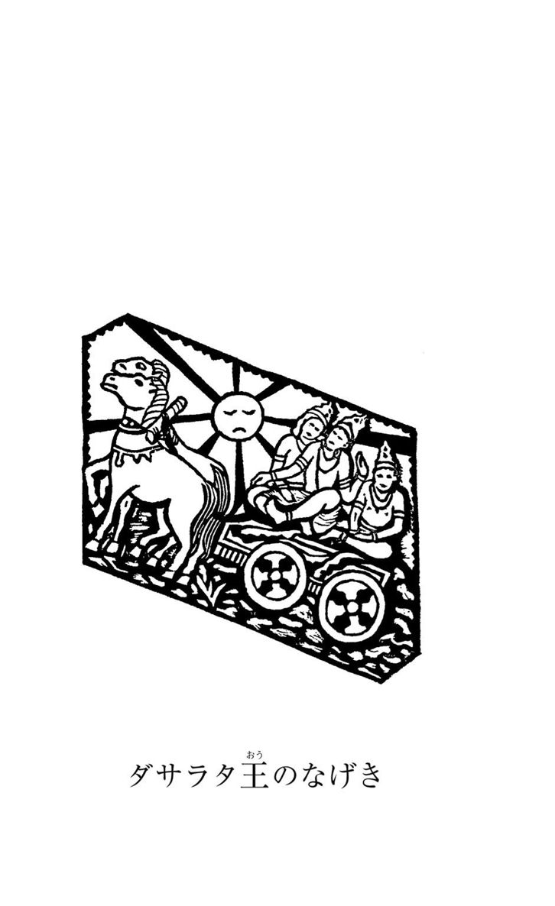
ぎょ者のスウマントラは、アヨージャへすぐもどってはきませんでした。馬はラーマのことをなげき悲しみ、スウマントラの心もおもく、馬車はのろのろといく日もすぎてから、都にやっともどってきたのです。町は生きた空もなく、よろこびも希望もうしなった墓場のようでした。
さびれた町をとおってから、馬をうまやにつなぎ、カウサルヤー妃の御殿にいきますと、国王は悲しみのあまり、病気になってお休みになっています。国王はスウマントラの顔をみるなり、ラーマのことをおたずねになりました。
スウマントラはすべてを語りましたが、なおも国王はいいました。
「どうかもういちど、話しておくれ」
そこでスウマントラは涙ながらに、みたことのしだいを二度までも話さなければなりませんでした。
「ラーマ王子とシータ妃とラクシマナ王子のお三人は、狩人のグハ王のところに一週間おとまりになってから、プラヤガ（いまのアラハバット市）のほうへ馬車をやれ、とおっしゃいました。
そこで、みなさまは王族のころもをぬぎすて、木の皮でつくった着物にきかえました。
シータ妃は身のかざりをおとりになり、ふたりの王子さまも身分のわかる勲章などをおはずしになり、とうとう木からとったゴムの汁を頭にぬって、べとべとしたきたない髪になられました。
すっかりうつくしさをおかくしになり、みなさまはしずしずと河をわたり、南のほうの森へすがたを消しておしまいになりました。ラーマ王子はおわかれするまえに、わたくしにこうおっしゃいました。
──では、スウマントラよ、父上によろしくもうしつたえてくれ。わが血筋がどんなにりっぱなものか、ためしてきます、とわたしがいっていたとつたえてくれ。母上にはバーラタ王子をわが子のように思い、カイケイー妃にもけっして荒あらしいことばをかけないように、とつたえておくれ。アヨージャの国民には追放の年月がおわったら、また帰国してよい友だちとなり、国王になるつもりだ、と話してくれ。
では、スウマントラ、ごきげんよう。あ、そうだ、母上にどうかよろしくもうしつたえておくれ」
スウマントラは涙をすすり、悲しそうにそのあとの話をくりかえしました。
「それから、わたくしは馬車をかえそうといたしました。ところが、どうでしょう。おとなしい馬なのでございますが、河のむこう岸をふりかえって、地面をひづめでけり、ラーマ王子さまにきこえるように、ひひんと強くいななくのです。
けれども王子さまのおすがたはみえず、馬のなきごえをおききになったとも思われません。馬は王子さまがもどってこられるかもしれないと、なん時間も立ちつくしていましたが、とうとうこちらへかえることにしました。
しぶしぶ故郷をさしてかけてまいりましたが、わたくしも馬もひとつ悲しみにしずんでいました。道みち、わたくしはなにをみたことでしょう？ 都はお葬式の行列のように思われました。
ラーマ王子をうしなったこの王国には、もうたのしいことはございません。道ばたの木の葉はしおれ、くだものもいろあせてしまいました。なにもかも目にみえぬ虫にくわれたようでございます。
わたくしがかえってまいりますと、アヨージャの国民は、からになってかえってきた馬車をみて、すすり泣くかわりに車輪にさわって、こういうのでございます。
──ラーマ王子さまはどこにいらっしゃる？......」
スウマントラは涙で息がつまり、おしまいまでいうことができません。
「ラーマ王子、ラーマ王子、ラーマ王子さま」
と、スウマントラは喉をつまらせて、くりかえしました。
「ああ、ラーマよ、ラーマよ」
ダサラタ王もまた、悲しみにうたれて叫ぶのでした。
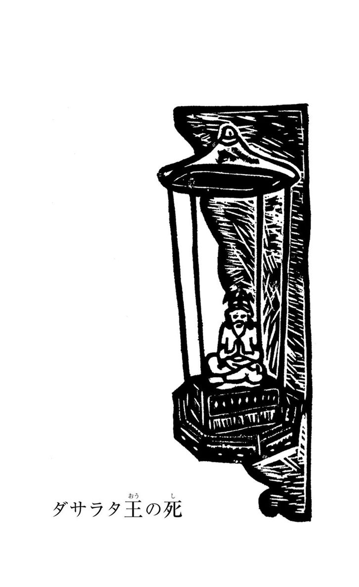
三日三晩、ダサラタ王はラーマをはじめシータやラクシマナをうしなった悲しみに泣きつづけていました。国王といっしょになげいて看病していたカウサルヤー妃は、ぼんやりしてしまって、どうすることもできません。
とうとう疲れきってしまい、四日目の看病の夜には、とろとろといねむりをしてしまいました。しかし一時間ばかりねむったかと思うと、国王がお妃をよんでいるのが、ふと耳にはいりました。
「カウサルヤー、ちょっとおきなさい。ひとこといいたいことがある」
「王さま、なんでございますか。わたくしはちゃんとおきております」
「だまってきいておくれ。わたくしはまもなく死ぬのではないかと思う。医者がよくいうとおり、人は死ぬまえにいろんなことを、すっかり思いだすものだということだ。
いまわたくしは結婚もせず、人生のことはなにもわからなかった若いころ、ある両親を深い悲しみにつきおとし、このため呪いをかけられたことを思いだしたのです。
──ある夜のこと、ジャングルの奥地へ象狩りにでかけたことがあった。わたくしは月の光をたよりに動物がよく水をのみにくる、しずかな浅い泉をみつけたのです。木のかげにまちぶせてみはりをしていると、どういうものか、この夜にかぎって、動物はいっぴきも泉へやってこなかった。明方ちかくになって空があからんでくると、疲れがでて、こどものようにねむくなった。
すると、よくひょうがとびかかるまえにはいよってくる、あのときのような足音がさわさわときこえてきた。ふたたびおなじ足音がした。ジャングルは深かったので、動物のうごくのがすこしもわからなかった。
銀いろの水をしゃぶる赤い舌もみえず、水をすう黒いからだもみえなかった。獲物をとりにがしはしないかと思って、三度目にその足音をきくと、わたくしはいきなり矢を射た。シャブダ・ベディというきりのような矢だった。矢は草のうえをはうまむしのように、音もなくとんでいった。
ところが、ジャングルのなかで、いきなり人の泣き叫ぶこえがした。その叫びごえは動物のこえではなく、まさしく深手をうけた人間のこえだったのです。びっくりして、助けにすっとんでいってみると、若い男がわたくしの矢に射ぬかれてよこたわったまま、いまにも死にそうになってもがいているではないか。
その男はやっとのことで、わたくしにいいました。
──わたくしはここへ水をくみにきたのです。すると、いきなり矢があたりました。わたくしは年とった両親と、ここから二キロばかりはなれた小屋にすんでいる貧乏人です。両親はふたりとも年をとってしまい、めくらになってしまったので、わたくしがやしなっているのです。わたくしを両親のところへつれていってください。死ぬまえにどうかもうひと目みたい！
けれども、その男は途中で息がたえてしまった。わたくしは両親のすんでいる小屋まで、男をひきずっていった。目のみえない両親は、わたくしのきたのをききつけて、叫びました。
──せがれや、喉がかわいてしょうがない。つめたい水をおくれ、なにをひきずってきたんだね。水をいっぱいかめにくんできたのかね。どうしたのさ、だまってなんかいて......。
そこでしかたがない、むすこどころか、むすこをころしたわたくしが話しかけた。カウサルヤー、そのときの有様が、いまこの場でありありとみえるのだ。わたくしはそのむすこのめくらの両親に、いたましいできごとをうちあけた。わたくしが話してしまうと、両親は目がみえないので、むすこの亡骸を手でさぐっていた。
大ごえでなげき悲しんでいたが、いきなり父親がわたくしに呪いをかけた。神の名によって呪いをかけたのです。
──おまえもいつかは、自分のしたとおりのことを仕返しされるだろう。おまえもきっと自分のむすこをうしない、そのため苦しんで死ぬことになるのだ！
カウサルヤー、どうかだまってきいておくれ。その呪いがとうとうやってきたのだ。いまわたくしは死の国へいくところです。ああ、さっきから目にみえぬどこかで、わたくしをよんでいるのがきこえる......」
こういったかと思うと、国王は気をうしない、カウサルヤー妃の足もとにたおれて、亡くなってしまいました。
ダサラタ王は若いころのあやまちをつぐなって死んだのです。人間がひとたび行なったことはなんであっても、生涯その人にまといつくものです。
よい行ないであっても、悪い行ないであっても、人が天国へいって魂がやすらかになるまでは、まといついてはなれません。人は乞食であろうが、王さまであろうが、自分がひとたびしてしまったことをかえることはできないのです。
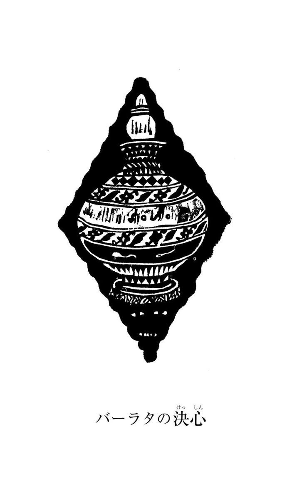
ダサラタ王がお亡くなりになると、急使がバーラタ王子のいるおじの国へとびました。一週間もたたないうちに、バーラタとサトルウグナのふたりは、いそいで都へかえってきました。
──町は戦争のあとの戦場のように、ものさびれていました。国民は国王の死をいたく悲しみ、都大路には人影もなく、家いえの戸は牢屋のようにかたくとざされて、心なぐさむすべもありません。
アヨージャの国のただならぬしずけさに、バーラタもサトルウグナも刃ものにつきさされたような思いがしました。ラーマの追放とダサラタ王がお亡くなりになったことはすでにきいてはいましたが、そのあとにこんな悲しみがのこったとは夢にも考えなかったのです。宮殿のちかくにきたとき、バーラタはサトルウグナにいいました。
「ひどいな、国民がこんなにだまりこんでいるのはひどいね。ぼくたちだってラーマ兄さんのことを悲しんでいるのに、国民はそのことをすこしもしらないのだろう。ぼくも国民の一人ひとりとおなじように、ラーマ兄さんをうやまっているのに、ひどいな」
しずまりかえった墓場のような屋敷街の一角を指さして、バーラタはこういいながら、宮殿の広場にはいっていきました。
バーラタは母のカイケイー妃の御殿にはいかず、まずカウサルヤー妃の御殿にまいりました。その部屋には、聖油をぬられた国王の亡骸がおかれていました。カウサルヤー妃は国王がお亡くなりになったときのもようと、ラーマの追放のことをしずかに話しました。
「これもただ......」
と、バーラタはこたえました。
「わたくしの母がおかした悪いたくらみのためなのです。だが、わたくしはこのことだけはお約束いたします。──わたくしはけっして王位にのぼろうとは思いません。わたくしの主君であり、おしたいしている兄のラーマにかわって、王位につこうとするものがあるならば、だれであろうと呪われるがよい！」
バーラタの、こういうりっぱなことばをきいて、カウサルヤー妃はいままた泣きくずれるのでした。
「よくいってくれました」
それから、バーラタはカイケイー妃の御殿にはいりました。そこには邪悪な妃とせむしの侍女が、花冠やら宝石やら、アヨージャのあたらしい国王にふりかける聖水などを手にもって、まちかまえていました。
「母上、いったい、これはなんのまねです」
バーラタはわれ鐘のような大ごえでどなりました。カイケイー妃は思わずおどろいて、花や宝石を手からおとしてしまいました。バーラタにじっとみつめられて、顔をあげることもできません。
「わたくしは王国や王位や王冠よりも、ずっとラーマ兄さんのほうを愛しています。このせむし女め、とっととでていけ！ ぼくの剣にさされないうちに、さっさと消えるがよい！」
と、バーラタはせむし女をにらみつけて叫びました。
マンタラーは悲鳴をあげ、わめきちらしながら、さっと逃げだしました。
母の妃とふたりだけになると、バーラタはおだやかになっていいました。
「母上、カウサルヤー妃のところへわたくしといっしょにまいりましょう。父上に無理にせがんだあのふたつのお願いをとり消してください。それから葬儀をすませ、ラーマ兄さんやシータ姉さんやラクシマナを探しに、ジャングルさして南へいきましょう。ラーマ兄さんを王位につけ、そのそばにシータ姉さんがすわるように、わたくしはきっと兄さんをつれてまいります」
カイケイー妃はおこった息子のことばにしたがいました。そうでもしなければ、マンタラーのきちがいじみた悪いたくらみにのってしまったお妃は、とても息子からまえのように尊敬されることはできないと思ったからでしょう。
翌日、国王の亡骸は火葬にされました。死者を火葬にすることは、今日のインドでもかわることなく行なわれていますが、インドでは古いむかしから死者は火葬にされることにきまっていました。
とうとう、国王の亡骸はもえつきて、灰になってしまうと、それを金の壺におさめて、お経をとなえながら聖い河へなげこみました。
ゆけ み霊よ
けがれなき神秘の道のべをゆき
神がみにあいたまえ
先にゆきし汝の父にもあいたまえ
葬儀がおわると、国内のまずしい人びとには食物をあたえ、すべての民衆には税金を一年めんじ、学問のある貴族たちには牛や穀物や勲章をたまわりました。
それから二日たつと、バーラタはアヨージャの国民に自分の決心をうちあけました。バーラタのことばは、つぎからつぎへつたえられました。
「この王国も王位もラーマ王子のものであります。わたくしは国民諸君とおなじくなつかしいラーマ王子をうやまっております。そのため、わたくしは明朝、軍隊をひきいて、王子たちの一行を探しに出発します。王子にかえっていただいて、父上や国民諸君の望みどおりに、ラーマの即位をお願いいたしたいのです。
わたくしのくわだてが成功するように祈ってください。神がみもきっとラーマ王子のかくれ家へわたくしをぶじにみちびいてくださるでしょう。わたくしはきっと王子をつれてもどってきます」
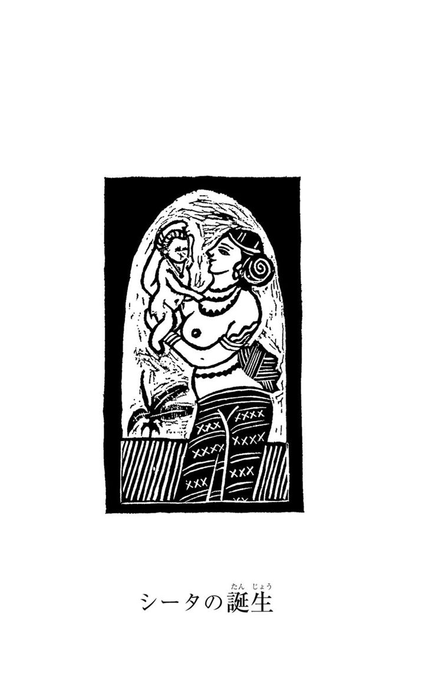
このあいだに、ラーマはシータやラクシマナをつれて、ガンジス河の谷間をこえ、チトラクタの丘（いまのビンジャ山脈）につきました。ちょうど人がひざまづいてお祈りをしているような、かたちのうつくしい山で、すみよいところのように思われました。
チトラクタの丘には、あちこちにいおりがたくさんあって、そこで聖者や隠者が神につかえる道を少年少女におしえていました。ラーマたち三人は、それらのいおりをさけて、人里からまったくかけはなれた場所を探しもとめていきました。
やっとのことで、その山の反対側にたどりつき、河がさらさらとながれている岸べに、小さなほったて小屋をみつけました。三人はともかく、ここにひと晩とめてもらおうと思いました。
このいおりには、アトリという聖者とその妻のアナスヤーがすんでいたのです。
ふたりの老人はながいこと人間の顔をひとりもみなかったので、気高いふたりの王子とうつくしいシータをみて心からよろこびました。
「ここにしばらくとめてもらいましょう」
と、ラクシマナはラーマをかえりみていいました。
「そのうちに南のほうの森もよくしらべましょう。シータもここしばらく女の人をひとりもみなかったのですから、アナスヤーおばさんとお友だちになれて、さぞうれしいことでしょう」
「そうだね。ラクシマナ、そういうことにしよう」
ラーマはこういいながら、シータとアナスヤーがいろいろ話しているのをうれしそうにみまもっていました。
毎朝、ラーマとラクシマナは狩りにでかけました。聖者のアトリはじっとおしだまって日の出から日の暮れまで一日じゅう神にお祈りをしていました。ふたりの王子が目にするあたらしいものをあれこれしらべているあいだに、聖者はその反対に目にみえないことがらをするどくみとおしていました。
シータとアナスヤーは、このふたりの男のために家を守っていましたが、ときどきちかくの森にはいっていきました。ふたりは巣をつくっている青さぎをみたり、かわせみが銀魚を追っぱらって大いばりでいるのをみたり、ちかづくと、はっととびたつ草色のおうむのむれなどを目にしました。
虎がひらりと身をひるがえして、そばをとおりすぎていきます。象が後足で立って、シータにおじぎをしたりします。ひょうはまるで自分の子のように、やさしくシータをみつめ、ライオンはかしこい犬のように、とおくのほうをあるきながらみはりしてくれました。
たまにはシータとアナスヤーは河の岸べにすわって、水面をかがみのかわりにして顔をうつしたりしました。またときにはひっそりと散歩したり、黙想したり、おたがいに口をきかずにしずかにしている日もありました。
ある日のこと、ふたりが河の岸べにすわっていると、アナスヤーがシータにたずねました。
「おうつくしい王女さま、どうしてシータなどという地味なお名前をつけられたのでございましょう？──すきの先から生まれたという意味ではございませんか。つまり地面からはえたという意味なのでございましょう？」
シータはそれにこたえていいました。
「わたくしの父のジャナカ王はひとりもこどもがありませんでした。それである日、こどもをさずけてくださるように神さまにお祈りしました。たいそう熱心にお祈りしたので、神さまも父の願いをおききとどけになったのでしょう。その夜、父はいい夢をみました。夢のなかで土をたがやせ、とお告げがあったのでございます。
そこで父は十二頭の牛をすきにつけ、自分の王国のひろい畑をすべて自分の手ひとつでたがやす決心をしたのです。ずいぶんながいことつづけました。その年のおわりころに、ぐったり疲れてしまって、牛を叱りつけながら、こうつぶやいたということです。
──神さまがもしおいでになるものならば、わたくしのお祈りもおききとどけになってくださるはずだが......。
しかし、なんのお告げもありません。日暮れになって大地が暗くなってきたとき、足もとの地面がぐらぐらとうごくのに、はっと気がつきました。するとそのすきまに、花嫁の衣裳のようなものが、さらさらと衣ずれる音を耳にしたということです。大地からきらきらと後光がさして、父は思わずくらくらと目まいがしました。
そのとたん、すきの先に赤ん坊の泣きごえがしたのです。牛は赤ん坊のこえをきくと、びっくりしてあたふたと逃げだしたそうです。父は突風に吹かれた小枝のようによろめきながらも、わたくしを腕に抱きとってくれました。
父は二度も三度もいいました。
──この子はすきの先から生まれた。大地から生まれた宝石だ。
わたくしのあとからもひとり生まれました。それが妹のウルミーラでいまでは義弟のラクシマナの花嫁です。
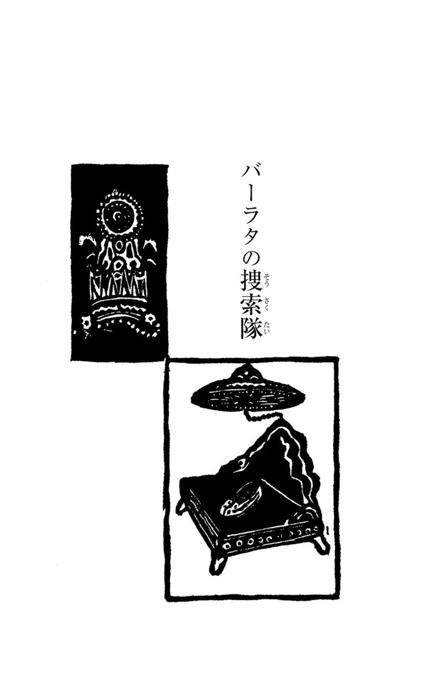
バーラタはぎょ者のスウマントラにみちびかれて、狩人のグハ王の国へはいりましたが、グハ王はバーラタのくわだてをなかなか信用しませんでした。
──バーラタがラーマを王国から追放しておいて、いままたラーマを亡きものにしようとして、南へいくところではないか、とうたがったのです。
そこで、ラーマを死の手からすくおうとあらゆる計略をたて、実際、もうすこしでバーラタを暗殺する計画までたてるところでした。ところがバーラタにあってみると、みるも悲しそうな顔をしているので、グハ王ははじめてびっくりしました。
「いったい、どうしたんです？ バーラタ王子、なんでそんな悲しいしずんだ顔をしているのです？」
「ああ、グハ王よ。アヨージャの国はラーマをうしなってしまいました。父上はラーマとわかれた悲しさにたえられず、亡くなられました。わたくしは国王になど、なりたくありません。兄さんを母国へつれもどすために、探しにきたのです」
「そんなこといったって、あなたの母上のカイケイー妃は、あなたのために王位と王冠とを要求なすったではありませんか？」
「グハ王よ、どうか、もうそのことだけはいわないでください。わたくしを助けて、兄さんを探しだしてください。やさしいシータ姉さんと情深いラクシマナといっしょに、いましずかに暮らしているラーマ兄さんのところへつれていってください。わたくしはただ、母のカイケイー妃のあやまちをつぐないたいのです」
グハ王はラッパを吹きました。狩人の角笛の音はなだらかにこだまして、とおくの森にいる狩人たちのところまで鳴りわたりました。すると狩人たちはまた角笛でつぎからつぎへと返事をつたえてきます。グハ王はそのラッパの音をきいて、バーラタに説明しました。
「バーラタよ、わたくしの部下たちは進軍しようとしています。明朝、チトラクタへ出発しましょう」
大部隊はプラヤガ（いまのアラハバット市）まできて、ガンジス河をわたり、その翌日にはすばしこい斥候にみちびかれて、チトラクタへすすみました。十日あまりすすんでから、アトリのいおりをみつけました。
──このとき、ふたりの兄弟が相会した有様をどういったらいいでしょう。
父の国王の死を、ラーマははじめてきいたのです。ラーマの深い悲しみを、いったいどのような詩人がかきあらわすことができましょう！ バーラタがどうか故国へかえってくださいというのをきいて、ラーマはびっくりしました。即位の日の前夜、奪われた王冠が、やっといまになってまたラーマに贈られたのです。
空たかく木はいきいきとしげり、地にはエメラルドいろの芝草がひろがり、さえずる鳥のこえと小川の銀のすずのようなせせらぎをききながら、ラーマはひとたび王冠をうけとってから、それをまたささげました。手はふるえ、息ははずんでいます。目には王冠のほかなにひとつみえず、バーラタの頭のうえに王冠をのせたのです。
「どうしたのです。兄さん、王冠をうけとってくださらないのですか」
ふたりの兄弟もグハ王もスウマントラも、みんな口をそろえていっせいに叫びました。
ただひとりだけ、ラーマの心中を深くしっているものがありました。それはシータで、ひとこともいわずじっとだまっていました。
「正統な王冠をうけとってくださらないとは、気でも狂ったのですか。わたくしをからかっているのですか？」
バーラタははずかしめられたのだ、と思ったのでしょう。
「バーラタ、どうか悲しまないでくれ」
と、ラーマはおもおもしく口をひらきました。
「父上がおっしゃったことばを、わたくしもおまえも守らなくてはならない。わたくしが十四年間追放されているあいだ、バーラタ、おまえが王国をおさめなければいけません。もしもわたくしのいうことをききいれないのなら、父上のした約束ははたされないことになる。だから、わたくしが森でくらす年月のあいだ、バーラタ、どうかアヨージャ国の王位についていてください。わたくしたちふたりは、なによりもいまは亡き父上に忠実でなければなりません」
これをきいて、バーラタの心ははりさけんばかりで、涙が目からはらはらとおちました。心やさしいラーマは、バーラタといっしょになって、自分たち一家の運命を悲しみました。バーラタは、なんという重荷を、母のカイケイー妃はむすこの自分に背負わせたのだろうとうらめしく思いました。
まず、グハ王が口をきり、スウマントラはじめ、みんなそろってラーマにお願いしました。
「ダサラタ王はもうすでにお亡くなりになったのではありませんか。国王の約束もそれで消えたわけです。ラーマ王子よ、どうかアヨージャへかえって悲しみをすくい、カウサルヤー妃をよろこばせ、国王となってください」
バーラタはシータについで、ラーマの心中がよくわかりましたので、こういいました。
「ヒマラヤ山の雪が消えるように、と願ってもむだなことです。牛に乳をながすのをとめさせようとしてもむだです。わたくしはラーマ兄さんのお心がよくわかりました。兄さんのお考えはただしい。どうしようもないから、わたくしはおことばにしたがいましょう」
「だれでも、死んでその生涯がおわるまでは、それぞれ自分の義務からのがれることはできるものではない。さあ、りっぱな父のりっぱな子として、いまから王国へかえり、いつくしみ深く、国をおさめてください。十四年の年月はまたたくまにすぎさることだろう。いまから、ただちにアヨージャにおかえりなさい」
「ラーマ兄さん、わたくしはアヨージャへかえっても、ただあなたにかわって国をおさめようと思うだけです」
バーラタは力づよくいいました。
「わたくしはけっして玉座にはのぼりません。このことはちゃんとお約束いたします。わたくしは摂政（君主にかわって政治を行なう人）として、よろこんで王国をおさめましょう。玉座のうえにおくのに、なにかよいものをください」
みんなこの場にいた人びとは、口をそろえていいました。
「わたくしたち一族は、なんと義理がたいことだろう。みんなかたく約束を守ってくれるのですね」
「はい、ちゃんと守りますとも」
と、バーラタはいいました。
「兄さんの靴をください。それを玉座のうえにのせておきたいと思います。兄さんが王国へおかえりになるまで、おいておきましょう。わたくしは摂政として、国をおさめましょう」
「よくいってくれました。ほんとにそうしてください！」
と、あつまった人びとは口ぐちにいいました。
翌朝、まだ日ものぼらず、鳥もさえずらず、あたりがひっそりしているあいだに、バーラタはラーマの靴を頭にのせて、故国へ出立しました。
バーラタは丘をこえ、河をわたり、プラヤガにまたもどってきて、狩人の王、グハのところに二、三日とまりました。それから、やっとアヨージャの国にかえりつきましたが、バーラタの心は、なおもはりさけんばかりでした。
「ああ、神さま、この先ラーマ兄さんがいない十四年のあいだ、ぶじに生きていく力をどうかおめぐみくださいまし」

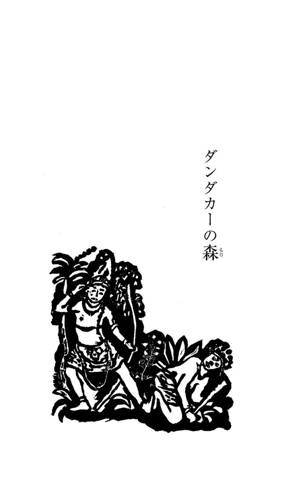
追放になった三人は、チトラクタから、さらに南へくだりました。それまでだれもはいったこともないような深い森にわけいり、おうむの背なかのようないろをして天たかくそびえている山やまのふもとをまわったりして、冬になるまえに、三人はダンダカーの森（いまのマイソール王国）に山小屋をつくりました。
カベリ河のほとりに小屋をたて、さむい季節にそなえて、食糧をたくわえました。たいへんな山のなかのことなので、いまでも春になると、動物はこの地方をとおって北へいき、秋になると南へとおっていきます。
ラーマもラクシマナも、移動する動物は危険だ、ということをよくしっていました。猛獣がふいにおそってきても、シータがびっくりしないように、ふたりは毎夜、かわるがわるおきていることにしました。
──やみのなかで虎がふいにとびかかってきたり、時にはひょうが生いしげった木の枝から、どさりと屋根のうえにとびおりてきたりします。ラーマは虎やひょうをほとんど毎日のようにころしました。野じしが川から小屋へめがけてきて、シータにおそいかかったりすると、そばにいたラクシマナは投げ槍でぶすりと刺しころしてしまいます。
一度など、たけだけしいわしがシータにおそいかかったことがありました。わしはラーマの弓術の腕前をしらなかったのですから、あやうくシータの目をくちばしでつつこうとした瞬間、ラーマのはなった矢にあたって死んでしまいました。
いつのまにか春もたけなわになると、荒あらしい動物は北のほうへうつり、やっと、この地方もいつか平和になりました。空にはさらの花の匂いがただよい、蜂は水のうえをうなりながらとびまわって、すいれんの花の蜜をすいます。インドでクラウンシャといっている青さぎが空をすいすいととび、夜になるとインドの鶯、ドエルがすばらしいこえでうたいます。
この歌ごえはねむりをさまたげるものの、いくらきいてもききあきず、おくびょうな子鹿さえも、夜明けの野牛のように勇みたつのでした。
春はどこにもここにもあふれ、カベリ河は水をまんまんとたたえてしずかにながれ、水のうえには黄金いろの縞蜂がぶんぶんとびまわっていました。どのすいれんの花にも蜂がとまっていて、すいれんのものがなしい歌をきいています。
──このように、身も心もうっとりとするダンダカーの森で、心のおおらかなラーマは、追放になった最初の春をおくったのでした。
心もとろけるような季節がおわろうとしたころ、ランカの魔王ラーバナの一族がこの森に侵入してきました。悪魔どもは動物や鳥をむさぼりくい、花や虫にさえようしゃしません。昼のあいだはねむっていて、夜になると暗やみでも目がみえるので、ねむっている動物をおそい、たべてしまうのです。またも、ラーマかラクシマナか、どちらかが武装しておきていて、悪魔の襲撃をしりぞける用意をしていなければなりませんでした。
この森の悪魔の大将は、カーラとドゥシャナ、それにスルパナカーという三人でした。スルパナカーはあの魔王ラーバナの妹だったのです。この三人がたくさんの家来をひきつれ、セイロン島からインド洋をこえてきて、春のダンダカーの森で遊びくるっていたのです。
ある日のこと、ラーマがカベリ河のほとりで水浴びをしていると、ちょうどそのとき、魔女のスルパナカーがものかげからじっとみていました。ラーマの筋肉は弓の弦のようにかたく、たくましく、皮膚は日光をあびてきらきらかがやいています。うつくしい顔をあげて、光の神に一心にお祈りをしていました。
ああ、太陽よ！
けがれなき古よりの途をよこぎり
神のみまえにいきたまえ
神の黄金の玉座にぬかずいて
わたくしにかわって告げたまえ──
ラーマの男らしい、さびのあるおちついたこえをきくと、スルパナカーはわなにかかった兎のようになって、なんとかしてラーマの気にいられようと思いました。ラーマが水からあがったとたん、スルパナカーは魔法を使ってうつくしい少女のすがたにかわり、ラーマのごきげんをとりだしました。
「まあ、なんとごりっぱなかたでしょう。あなたのためなら、それこそ、この森をすっかりお酒にかえてごらんにいれますわ」
ラーマは笑いながらいいました。
「お酒なんかけっこうですよ。せっかくですが、なんにもいりません。わたしは妻のシータとここにすんでいるのですが、なにひとつ不自由ありません」
ところが、スルパナカーは悪魔ですから、人間の正しい世界がどういうものか、すこしもしりません。
「シータですって、あんな女のどこがいいというんです。わたしだって......」
「馬鹿なことをおっしゃい。シータの悪口をちょっとでもいってみろ！ 永遠の地獄へなげこんでしまうぞ。さっさと、あっちへいきなさい。シータに指一本さすやつがあったら、だれであろうと、きっところされるものと思え。たとえぼくの腕が弱くても、ラクシマナがいる。嵐の神でさえ、ラクシマナのつよさにはかなわないのだ。あっちへいけ！」
ラーマはこういって、象のようにどうどうと、ゆっくり大またにあゆみさりました。
しゃくにさわったスルパナカーは、そこで悪いたくらみをしたのです。まず、妻のいないラクシマナを誘いだしておいて、それからラーマをころそうとしました。
──ある日、ラクシマナがあてもなくジャングルのなかをあるいていると、スルパナカーは荒野で道にまよったあわれな女にすがたをかえて、いきなりちかよっていきました。しかし、頭のするどいラクシマナは、なんとずうずうしい女だろうと、ひと目でみ破りました。スルパナカーがそばへよってくると叱りつけ、聖者のように手もふれないで立ちさったのです。
スルパナカーはそれにもこりず、毎日まいにち、ラクシマナのあとを追いかけましたが、そのたびにラクシマナはきっぱりとはねつけました。
四月のよく晴れたある日のこと、スルパナカーはラーマが狩りにでかけたのをみすまして、ラクシマナがそばにいるともしらず、いきなりシータにおそいかかりました。シータは叫びごえをあげ、助けをもとめました。ラクシマナはすぐさま、この魔女をめがけて矢をはなちました。スルパナカーはたちまち人間のすがたをかなぐりすてて、みるまにさっととびあがりました。
もう正体はすっかりばれてしまったのです。ラクシマナは矢つぎばやに、矢をはなってスルパナカーの鼻と耳を切りおとしたので、魔女は悲鳴をあげて逃げていきました。
──ああ、このことが、なんというわざわいのもととなったことでしょう。カーラとドゥシャナのふたりの悪魔はこれをみて、たくさんの家来をひきつれ、秋の畑のばったのように、どっと、若いラクシマナめがけておどりかかりました。
足のはやいラクシマナはあっちこっちとかけまわり、矢をぴゅうぴゅうと雨のようにうちまくりました。
矢はわしのようにうなりをたて空たかくとんで、敵の息の根をとめずにはおきません。たたかいはますます猛烈になって、空は矢でおおわれ、真昼なのにまるで真夜中のように暗くなってしまいました。
けれども、悪魔たちもさるもので、屍をのりこえ、ぞくぞくとせまってきます。
悪魔は、いまにもラクシマナをたおし、おそろしさにおびえているシータをさらっていこうとします。大地がさけるようなかん声をあげ、狂った黒牛のように攻めかかってきます。とうとうあわれなことに、ラクシマナの矢筒はからっぽになってしまいました。
「ああ、ラーマ兄さん、どこにいるのです。はやくきて、助けてください。悪魔がシータをさらっていきそうです」
波のようにおしよせてくる悪魔のさわぎに消されまいとして、ラクシマナはこえをはりあげて叫びました。三度目に叫んだとき、ふとある物音が耳にはいりました。
──かもめがとぶような物音です。ラーマの矢が空をかすめてとんできたのでした。矢は敵の背後をついたわけです。
この矢の襲来で、悪魔どもはあわてふためき、数百人の悪魔がたおれてしまいました。ラーマの矢は、あるときはいちどにふたつの方向からつきささり、またあるときは思いがけない方向からいきなりぶすりとつきささるのです。
まもなく、悪魔はみんなたおれてしまい、あたりはひっそりと、もとのしずけさにかえりました。ラーマはライオンのように、屍をとびこえとびこえ、いそいでやってきました。まずおそろしさにふるえているシータをなだめ、それからラクシマナにむかって、その勇気を心からほめたたえました。
このことがあってから、ダンダカーの森では、もう悪魔の襲撃もなく、三人はしずかに暮らすことができましたが、それも一時のことでした。
──三人ともやはり人間であったので、このことがもとになって、あとでおそろしいわざわいがおきるとは、夢にも思いおよびませんでした。
恥をかいたスルパナカーはランカの国へかえり、悪魔の軍勢がたたかいやぶれ、全滅したことのしだいを、魔王ラーバナに話したのです。鼻も耳も切りとられてしまったスルパナカーの顔は、この話のもっともたしかなしょうこでした。
「王さま、ごらんくださいませ。わたくしたち悪魔の兄弟がさんざんにころされたばかりでなく、王さまの妹のわたくしの鼻まで、こんなにされてしまったのです！」
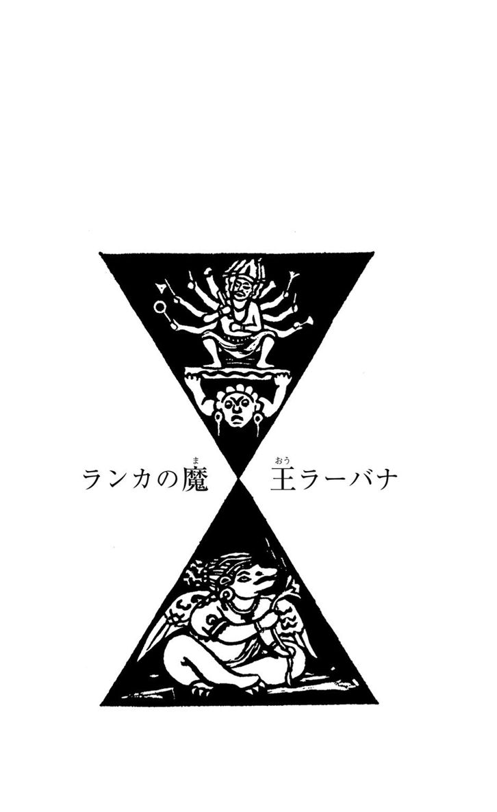
頭が十、手が二十もある魔王のラーバナが、まだランカの王さまになる以前、この島は数百年のあいだ古くから巨人の領土でした。巨人たちの勢力はいつのまにかたいへん強くなり、ついには天国までも攻めよせるようになりました。
そこで、大神のビシヌはたいそうご立腹になって、巨人どもにとらわれた神がみのすがたをごらんになると、チャクラというご自分の円盤を巨人めがけてなげつけました。この円盤はどこまでもくるくるとまわっていってつけねらい、巨人たちの首を切りおとしてしまいました。このとき、わずか数人の巨人がインドの海にとびこんで、やっとこの円盤からのがれることができたのです。
海におちた巨人たちは、底しれぬわびしい大洋のなかを、しずかなかくれ家として、ほそぼそ命をつないでいました。
巨人の大将、スマーリが水のなかでやきもきして、ランカをとりもどそうと、かずかずのばかげたたくらみをしているうちに、ながい年月がたちました。
──そのころのランカの王はビシラーバという神で、それはうつくしい若ものでした。ビシラーバ王は七つの芸ごとをたいそう好まれ、むかしからの武芸百般のことはすててかえりみません。家来たちもみんな王さまといっしょになって芸ごとに熱中し、王さまを「七つの芸ごとの勇者」といってたたえていました。
ある日のこと、ビシラーバ王は、ひとりのうつくしい少女が、あわだつ大洋のなかからぽかりとあがってくるのをみました。かわいそうに、この少女が巨人のスマーリの娘カイカーシイだということを、ビシラーバはしりませんでした。
カイカーシイはランカの王をだますように、と父にそそのかされて、水のなかからあらわれたのです。
父のスマーリはこういったのです。
「わたくしはもうすっかり年をとってしまった。巨人のなかでも年よりだし、まもなく死ぬことになるだろう。カイカーシイよ。わたくしはランカをとりもどすことができなかったのだから、どうかおまえがいって、子孫のためにランカを奪っておくれ。おまえの力でビシラーバをだましなさい。そうしたら、おまえのこどもたちは、いずれランカの王さまになれるにちがいない」
これだけいうと、年とった悪魔はそのまま息がたえてしまいました。
カイカーシイは父の遺言を守って、海底の真珠や、さんごの木や、月が海のほら穴で昼間のうちにつくるという月長石などを、身にかざりつけてあらわれたのです。魔法で顔をすっかりかえ、うつくしい紫のころもをきていました。このカイカーシイが夜明けの虹いろの波まにただよっているところを、ビシラーバ王がみつけ、これは天国からきた少女にちがいないと思ったのです。
まことに、カイカーシイが王のほうへちかよっていくと、そのあとにうつくしい青玉いろの道がひろがりました。これでは、たとえ神さまでもだまされてしまいます。ビシラーバもすっかりだまされてしまったのです。
ビシラーバ王はカイカーシイを妻にしました。やがて、こどもがふたり生まれましたが、そのひとりがラーバナであり、もうひとりがクンバーカルナという、生まれながらの悪魔でした。そのあと、巨人の血筋は人間なみになったのか、三番目に生まれたのが、ビビシャナという小さい天人で、行ない正しいきよらかなこどもでした。
一番末に生まれたのが、あのスルパナカーで、母親そっくりのうつくしい娘でしたが、すべての巨人の女たちとおなじように、やさしいところがすこしもありませんでした。
カイカーシイが死ぬと、こどもらの父親もこの世をすて、天国へもどりました。そこでラーバナがランカ国の王位についたのです。かれは追放されていた巨人をさっそく海からつれもどして、自分の家来にし、それぞれ隊長にとりたてました。
──それから、ラーバナとふたりの兄弟は、父親から代々うけついできたきびしい修業に精進しはじめました。人間にはだれにでもある神ごうしい性質がラーバナにもいくらかのこっていて、そこでお祈りを好み、また苦しいおしえにしたがったのでしょう。大神はこの三人の兄弟が、そろって熱心に精進するのをたいそうおよろこびになって、あるとき、こうおっしゃいました。
「おまえたちに願いごとがあったら、なんでもききとどけてあげよう」
「どうか、わたくしたちを不死のからだにしてください」
と、ラーバナがさっそくお願いすると、大神はいいました。
「ひとたび生まれたものは、かならず死ななければならないものじゃ。おまえが生まれてきたのでなかったら、死からすくってあげることもできたろう。ラーバナ、いい子だ、なにかほかのお願いをなさい」
「わたくしを天の支配者にしてください」
と、ラーバナはせがみました。
「それから、ものごとをよく考えることができるように十の頭と、よくたたかえるように二十本の腕とをおさずけください」
「よろしい。そうしてあげよう」
と、大神はこたえました。
つぎに、二番目のクンバーカルナは
「わたくしはいくらねむりつづけても、けっして死ぬことがないようにしていただきとうございます」
と、お願いしました。
すると、大神はこうおっしゃいました。
「しかし、正体なくねむってしまったら、死んでいるのとおなじことではないか」
「はい、死なないからだになるためなら、一日ぐらいおきていてもようございます」
「それでは、その一日だけは、だれもおまえをころすことができないようにしてあげよう」
と、大神はおききとどけになりました。
「しかし、おまえのねむりをどういうふうにかげんしようか」
「はい、おゆるし願えますなら、六カ月に一日だけおきていることにしてくださいませ」
「それなら、そうしなさい」
と、大神はおっしゃいました。
「しかし、半年たたないうちに、クンバーカルナをおこしでもしたら、たちまち死んでしまうぞ。よく気をつけるがよい。百八十二日と半日間、ぐっすりねむりつづけるまで、だれもおこしてはならないのじゃ。
もし、ちょっとでもはやくおこしたら、おまえにせっかくやった不死の約束もだめになり、人間でもおまえをころすことができるようになるだろう」
「はい、かしこまりました」
巨人はこう叫ぶと、こんこんとねむりにおちてしまいました。
そこで、大神は三番目のビビシャナをごらんになりました。
「おまえの願いはなんだね」
ビビシャナはおこたえしました。
「いつ、いかなるときでも、どんなすがたになったとしても、神さまにおつかえできるようにしてくださいませ」
「よろしい、ききとどけてあげよう。ビビシャナはなかなかりっぱな子だ......」
大神がこういって、うるわしいことばをむすぶと、たちまち、みすがたはかき消えてしまいました。三人の兄弟はランカの町まちへおりていきましたが、クンバーカルナはもうねむっていたので、よろよろあるいていました。
それから六カ月たって、クンバーカルナがねむりからさめたときをねらい、ラーバナはクンバーカルナの不死になったからだを利用して、天国へむかって宣戦したのです。不死のからだとなったクンバーカルナがラーバナを助けたのですから、まさに無敵です。
兄弟はいっしょになって領土をひろげ、天国まで攻めよせ、インドラの神をはじめ、そのご兄弟の神がみを捕虜にしてしまいました。
この日から、悲しいことに、神がみはランカの悪魔たちにつかえなければならなくなったのです。おそろしい悪魔どもは、もうはたらくことも、たがやすこともしなくなりました。神がみがどれいとなって、なにからなにまではたらいて、そのかわり悪魔どもが、勝手きままにのんだり、さわいだりするようになってしまいました。
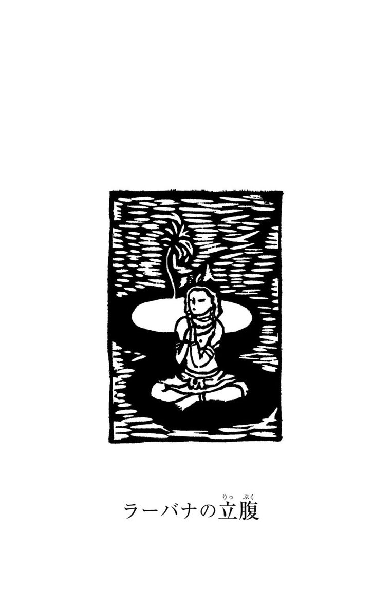
セイロン島の都ランカは、神がみの苦役によって、大都市になったのです。神がみは大理石の町まちをはききよめ、石のらんかんをみがき、町の灯を朝日のようにあかるくしました。天国の人びとはぞくぞく捕えられ、どれいにされてしまったのです。そのうえ、なおもラーバナの軍隊は罪なことをかさね、とおい国へいって女たちをさらってきたりしました。ラーバナは悪事をはたらくのが、いつか癖となり、よいことをしようと思いたっても、もうそうする気力がありません。たった一度、よい決心をして、こういったことがあります。
「天へのぼる階段をつくってやろう。そうしたら、だれでも生きながら、不死の楽園へのぼっていくことができるではないか」
そこで基礎工事をし、石工がはたらきはじめましたが、ラーバナはたちまち興味をうしなって、天国へのぼる階段はとうとうつくられずにおわりました。
悪いことばかりする習慣がたいそう強くなっていたので、よいことをすこしでもしようと思ってもできなかったのです。
ラーバナはこういった有様だったので、鼻と耳とを切りとられた妹のスルパナカーをひと目みると、すぐさまかっと腹を立てました。スルパナカーはしくしく泣きながら、シータとラーマとラクシマナの三人が、わたくしを傷つけたのです、とラーバナにうったえました。
スルパナカーは、大げさにいろいろうそをつきました。
「しかし、おまえはどうして鼻まで切りとられたのだ」
と、ラーバナはうたがい深くたずねました。
「いったいぜんたい、おまえはなにをしでかしたのだ」
「わたくしはラーマに、妻にしてくださいといいました。ところが、ラーマはシータがいるとこたえました。──ラーマはシータをよろこばせようと思って、わたくしの顔を傷つけ、こんなにしてしまったのです」
「たしかに、まちがいないか」
ラーバナはきっとなってたずねました。
「はい......」
と、スルパナカーは泣きごえをだしました。
「シータはうつくしい女か？」
魔王はつづけてたずねました。
「ええ、それはもううつくしい人です」
スルパナカーはせきこんで、つけくわえました。
「兄さんのお妃のマンドダリよりも、ずっとうつくしいくらいです」
「なに？ なにをいうか」
ラーバナの口は雷のようなこえをたてました。
「マンドダリよりもうつくしいって！ 天にも地にもそんな女はいないはずだ」
「だって、兄さんはまだシータをごらんにならないではありませんか。いくらマンドダリだってシータのまえへでたら、それこそ月がのぼると消えてしまう、あの星のようなものです」
ラーバナはこれをきいて、ますます腹を立てました。
「さがれ！ わしが自分の目でシータをみてくる」
こうして、ラーバナは妹のスルパナカーを荒あらしく追いはらうと、二頭の翼のはえた馬をひきださせ、神がみをうちまかしたときにぶんどった天かける神の馬車に、馬をつけさせました。
馬車にとびのって、ラーバナは空たかく舞いあがりました。やがて馬のひづめが天国の丘をけちらすころには、もう日はしずんで、馬の足からとびちる火花が赤いリボンのように、きらきらと地平線のかなたへながれました。まっ白な馬にひかれた馬車は、舞いあがり走りつづけているうちに、やがて日の出の火のような光をうけて、馬の翼はきらきらと黄金いろにかがやきはじめました。
ラーバナが目をおとして、ふとダンダカーの白い池をみると、そこにシータが黙想しながら、お祈りをしているではありませんか。こんな神ごうしい光景というものは、人間であろうと悪魔であろうと、だれもみたことはなかったにちがいありません。
ラーバナもこの光景に、思わずおそれかしこんで、胸がいっぱいになってしまい、しずかにこっそりと馬の頭をかえしました。
シータの身のまわりにたちこめているしずけさに、ちかよるのがこわくなって、さすがのラーバナも、しずかに馬車をかえしたのです。馬は首をランカのほうへむけ、マンモースのように荒あらしく足をけたてて、胸や首をのけぞらしました。口から吹きだす泡は、太陽の光にきらきらかがやき、ただまっしぐらに走りつづけるのでした。
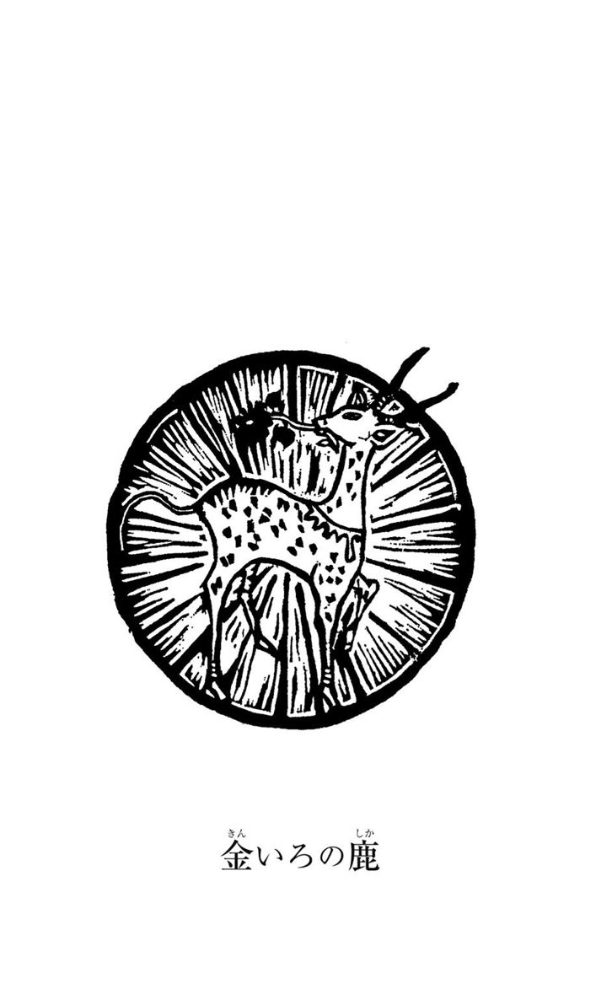
頭が十もある魔王のラーバナは、シータの神ごうしさにつよくうたれて、ランカにかえってからというもの、気はますますいらだつばかりでした。そしておりおり、都の町まちをさまよいあるくすがたが目につきました。なんの行列もつくらず、宮殿からひとりぬけだして、ランカの大理石の歩道をぼんやりあるいていました。
都の公園のなかをとおると、悪魔どもがへんな楽器をかきならしています。泉水が歌をうたうと、ボロをまとい、いろいろなかっこうをした悪魔が、空へとんだりはねたりしていました。けれども、ラーバナの目にはなにもはいらず、耳にはなにもきこえません。
宮殿の庭の黄金いろの露台にいても、象牙の格子をはめた窓のそばにいても、数しれぬ天国の鳥がさえずるのをきいても、ラーバナのふさいだ心はすこしも晴れません。芸術や学問にせいをだそうとしても、シータのことが気にかかってなりませんでした。
とうとう、ラーバナはひとりごとをいうようになりました。
「妹が傷つけられたのだから、その復しゅうをしてもいいわけだ。よし、おれはシータを奪いとって、あいつらをこらしめてやろう」
ラーバナはこういう悪い考えを思いつくと、さっそくそれにとりかかりました。
マーリーチャという悪魔をひとりつれて、ふたたび天かける馬車にうちのってでかけました。
翼のある馬は、はやくもダンダカーの森につきました。道みち、魔王はラーマの妻をぬすむ計略をマーリーチャに語りました。
ふたりはいろいろな方法を考え、いいあらそいましたが、ついに目的地へつくと、ラーバナは最後にこういいました。
「おまえはおれの命令にしたがってさえいればよいのだ。馬をニルギリ山（いまの青山山脈）のふもとにつないでおいてから、おまえは全身金いろの鹿にすがたをかえるのだ。角まで金いろにするのだぞ。
魔法によって、すっかりすがたをかえたら、ラーマの小屋ちかくをぶらぶらしていなさい。シータがおまえをみたら、きっとおまえをつかまえてくれというだろう。
ラーマかラクシマナがたのまれて、おまえを追いかけたら、おれがおしえたとおりに、ちゃんと逃げるんだぞ。しっかりやりなさい。もしも、おまえがいうとおりにちゃんとしなかったら、おれはおまえをすぐころしてしまうから！」
毎日まいにち、マーリーチャは金いろの牡鹿のすがたになって、ラーマの小屋のまわりをとんでいました。こんな動物はだれもみたこともありません。鹿はひづめから角の先まで金いろでした。
マーリーチャは暑い日なかでも休むことなく、金いろのすがたをあらわしました。日がしずむころには、全身がきらきらかがやいて、紫いろの水をあびているようにみえます。
こんなかわいらしい動物をみて、心をうごかさない人があるでしょうか。ある日の午後、シータは鹿がさら双樹の木かげからとびだしたところをみて、ラーマにいいました。
「どうか、あの鹿をつかまえてくださいませ。あれを遊び相手にしたら、どんなにおもしろいことでしょう」
ラーマはそれをきいていいました。
「あれは、どうもほんとうの鹿ではなさそうだ。シータ、金いろの鹿なんて、まだだれもみたことはないだろう。あんなものを欲しがってはいけないよ。なんだか、うす気味わるいやつだ。気をつけないと、どんな目にあうかしれたものではない」
しかし、わざわいがとうとう、ちかづいてきたのです。ラーマのするどい頭もだまされてしまいました。シータは、なおもラーマにせがんだのです。
「ラーマ、お願いです。はやく取ってきてください。あの、この世のものとも思われない鹿をつかまえてきてください。生きていても死んでいてもかまいません。生きていたら遊び相手にし、死んでいたらその皮を宝にいたします」
シータがこういって、ラーマのいうことをすこしもきかないので、ラーマもしかたなく狩りにでるしたくをしました。でかけるまえに、ラクシマナにむかっていいました。
「よく気をつけて、わがままなシータをみていておくれ。ラクシマナ、わたくしがかえってくるまで、シータのそばをはなれないで、しっかりシータを守っていておくれ」
ラクシマナはちかっていいました。
「はい、兄さん。わたくしの息の根がとまっても、きっとシータを守っています」
ラーマは、シータとラクシマナをしっかり抱きしめてから、鹿をおっていきました。ラーマがいっしょうけんめいに追いかけてくるのをみると、悪魔はしめたとばかり、ラーバナからおしえられたとおりにしました。
マーリーチャはラーマを小屋からはるかとおくまで誘いだし、ジャングルの奥をぐるぐるまわって、方角がさっぱりわからなくなるまで逃げていきました。
ラーマは森のなかでまよってしまったことに、はっと気がつきました。もはやマーリーチャを生けどりにするどころではありません。鹿をいますぐ射ころすか、それともなにもしないでシータのもとへかえるか、どちらかにしなければなりません。
そこで、ねらいをさだめて、あの「神の刃」という矢をはなちました。矢は空中でくるくるまわって、マーリーチャをつきとおし、森の地面にたたきつけました。するとどうでしょう。たちまち悪魔のすがたにかえって、かねておしえられていたようにラーマそっくりのこえでわめきたてたのです。
「きてくれ。ラクシマナ、たすけてくれ！ 鹿が角でぼくをつくんだ。はやくきてくれ、ラクシマナ！」
ラーマはこの悪魔の叫びごえをきくと、もう一本矢をつがえて、悪魔をだまらせようとしました。「サブダベディ」というすてきにつよい矢をはなとうとするそのあいだにも、マーリーチャはなんども叫びました。叫びごえは、ほうぼうへこだまします。
「きてくれ、ラクシマナ。はやく！」
この助けをよぶこえに、ラクシマナがシータのそばをはなれはしないか、とラーマは心配しながら、家のほうへいそぎました。しかし、ジャングルは薄暗く、めくらのようになかなかあるけません。たくさんの虎や象を切りころし、深いやぶをやっとつきぬけると、森のそとにでる道がみつかりました。
そこから百歩もあるくかあるかないうちに、ラクシマナが馬のようにいそいで、こちらへかけてくるのに、ばったりあったのです。ラーマはいそいでくるラクシマナのただならぬようすをみてつぶやきました。
「ああ、なにか一大事がおきていなければいいが。シータはどうして、あの金いろの鹿を欲しがったりしたのだろう」
そこへ、ラクシマナが叫びながら、とんできました。
「兄さん、なんだ、ごぶじだったんですね。なんだって、あんな大きなこえで助けをよんだんです」
「まあいい、さあ、はやくかえろうじゃないか」
と、ラーマは心配そうにいいました。
「あるきながら話そうじゃないか」
「兄さんの叫びごえが、なんどもなんどもこだましてきこえてくると、シータはわたくしにはやく助けにいけというのです。でも、わたくしはシータのそばをはなれるわけにいかない、といいました。すると、シータはわたくしがおなじことをくりかえしいうので、おしまいにおこってしまい、こういいました。
──あなたはわたくしをいじめようと思って、ラーマを助けにとんでいかないのですね。兄さんが死ねばいい、と思っているのでしょう。
シータはこんないやなことを三度もいうのです。それこそ針にさされるような思いがしました。そこで、すばやく小屋のまわりにおまじないをかけておいて、兄さんのこえのするほうへ走ってきたのです」
「そうか、それでいいのだ。おまえになんの手落ちもない」
と、ラーマはいいながら、またこうも考えました。
「でも、あのシータともあろうものが、どうしてそんないやなことをいったのだろう。よほど魔がさしたものにちがいない。さあ、なにがなんだかわからなくなってしまった」
そこでまた、ラーマはラクシマナにむかって叫びました。
「ぼくとおまえが、なんのために生まれてきたのか、そのほんとうのわけがわかったような気がする。どうして、こんな妙な気がするのだろう。なぜこういらいらするのだろう」
それから、ふたりの王子はひとことも口をきかず、大いそぎであるきました。ふたりとも餌食にしのびよる虎のようにだまりこんでいたのです。
ラクシマナはさっきシータがいったひどいことばを考えながら、シータをうらめしく思いました。ラーマのほうは、悪魔がシータにおそいかかったのではないかと思い、シータの身はどうなったことだろう、とますます心配になりました。
弟はやっと心のほこりをとりもどしましたが、兄の心は悲しさとおそろしさで胸がはりさけんばかりです。
ふたりは日がくれる一時間ほどまえに、やっと小屋にたどりついてみると、はたしてシータのすがたはどこにもみえません。ふたりは大ごえで叫んだり、手をうったり、いろいろのことをしてみましたが、なんのこたえもありません。
ふたりの心は破れんばかりの思いでした。蓮の池のそばにも、シータのきた足跡さえありません！
「シータ、どこにいるんだ」
ふたりの若ものは泣きわめきました。
空吹く風もこれにこたえて、どこからともなくささやいていました。
「どこにもいない。どこにもいない。どこにも......」
木樹もつる草もささやいて、そのたびに落ち葉をぱらぱらと、おとしました。
「どこにもいない。どこにもいない。どこにも......」
「シータは、かどわかされたのだろうか？」
と、ラーマは弟に思わずたずねました。
「どうして、そんなことがありましょう」
と、ラクシマナはいいました。
「ぼくは小屋のまわりにおまじないをかけてきたんです。どんなものでも、十メートル以上小屋へちかよることはできないはずです。シータがそこからふみこえて、でさえしなかったら、だれだっておまじないを破って、シータをつかまえることなどできるものではありません」
「シータ、なんとかいっておくれ。いったい、どこにいるのだ」
ラーマがいくらくりかえし叫んでも、なんの返事もありません。こだまも悲しさのあまり、だまりこんでしまいました。いくら叫んでも、いくら探してもみつからず、とうとう夜になって月がのぼりはじめました。月はきらきら光るたくさんの星ぼしにかこまれて、空にかかりました。
いつのまにか、世界はやさしい銀いろの光につつまれてしまったのです。ふたりの兄弟は、くたくたに疲れはてて、とろとろとねむってしまいました。
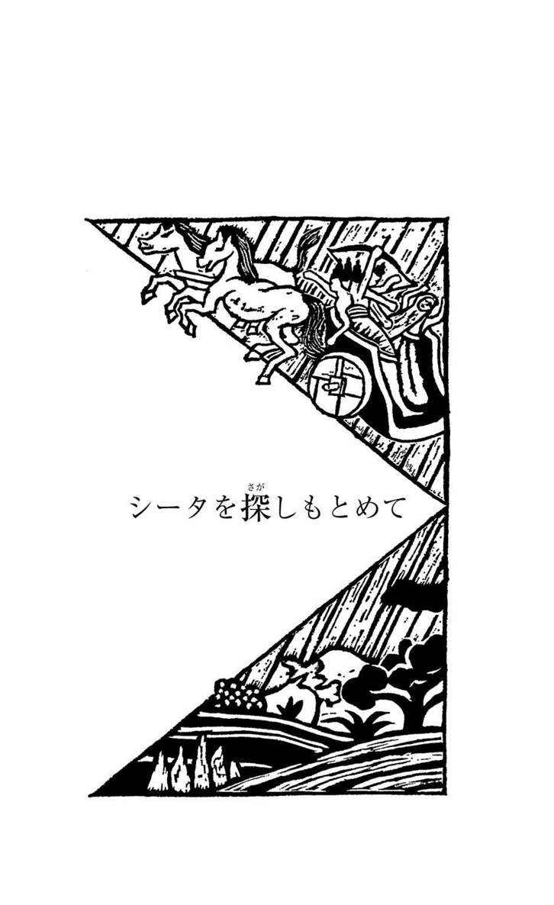
ラーマは悲しさのあまり、まるで気がちがったようになって、しばらくは寝てばかりいました。空吹く風の音をきくと、そのたびにがばっとはねおきたりします。
風がこういっているように思われるのでした。
「シータがかえる。ほら、よくきいてごらん。ほら、耳をすましてごらん」
ラーマは夢中になって、じっと耳をすましてばかりいたので、ひょうのしのびやかな足音も、鹿の荒あらしいかけ足も、みんなシータがかえった物音ではないかと、とりちがえました。耳をつんざくような虎のうなりごえや、水牛の断末魔の叫びごえが聞こえてくるときなど、シータがてっきり助けをよんでいるのではないかと思いこみました。
ラクシマナは力ずくで、ラーマがとびだしそうになるのを、じっとつかまえていなければなりません。こんな夜中にとびだしたら、きっと死んでしまうからです。夜どおし兄の王子は、きちがいのようになっているので、弟の王子は苦労しながら、夜の明けるのをじっと待っていなければなりませんでした。
やっと、こんな日がすぎて、ふたりはまた気をとりなおし、シータを探しにでかけました。心はすっかりとりみだしていたものの、こうした災難にあってみると、目はわしのようにするどく磨ぎすまされてくるものです。ラクシマナがまじないをかけたところをよくみると、だれかがシータの髪の毛をつかんで引きずっていったと思われる、荒あらしい痕跡が地面のうえにのこっています。
その跡を注意深くたどって、ほんの一、二歩いくと、地面にはただ巨人の足跡しかのこっていません。ふたりの王子はこれをみて、びっくりしました。
「人間の足跡が、どうしてこんなに急に巨人の足跡にかわっているのでしょう？」
と、ラクシマナはいいました。
「この足跡をつけていこう」
と、ラーマは弟をうながしました。
「ともかく、いってみようじゃないか」
またしばらくいくと、こんどは馬のひづめと馬車の輪のあとがありました。ところが、しばらくすると、このひづめと輪のあとも、いつのまにか消えてしまっているのです。そのあたりには、うす気味わるいしずけさがただよっていました。そよと吹く風さえなく、シータを馬と馬車とで、どうしてさらっていったものか、見当もつきません。
ラーマの心はまたも狂わんばかりです。タマラの木のところへいって、よびかけてみました。
「シータがどこへいってしまったのか、しっていたらおしえてください。木のなかの王さま！」
なんの返事もないので、こんどは心をとろかすような花をつけて、いい匂いをはなっているシャムパックの木のところにいきました。
「やさしいシャムパックさん、いったい、シータはどこにかくれているのか、おしえてください。ぼくはかくれんぼに負けました。さあシータのかくれ場所をおしえてください」
しかし、この木もなんともこたえてくれません。意地わるく、だまっているのに腹を立て、ラーマはこういいました。
「あの木にも、この木にも、みんな呪いをかけてやる......では、この森のつる草におたずねしよう。きれいにつるをまきつけたつる草さん、シータはいったい、どうしたんでしょう。なぜ、ぼくをこんなひどい目にあわせるのでしょう。
──森の女王さま！ どうか話してください」
ひとつひとつのつる草に話しかけましたが、だれもこたえてはくれません。そのたびにラーマは、どれにもこれにも呪いをかけました。
こうしてさまよっているうちに、ふたりの王子はいつとはなしに、からりとしたところへでました。みると、みどりの草のうえにシータの腕輪がおちているではありませんか。それをみて、ラーマの頭ははっと正気にたちかえりました。
「おや、シータの腕輪だ......どこにいるんだろう？......やっと、ここまでたどってきた。ラクシマナ、さあ、もっとむこうのほうへいそいでいってみよう」
千歩ばかりいくと、そのとき、なにものか刺すようないたましい叫びごえがきこえました。槍のように大きなとげがはえている草むらをいそいでとおりぬけ、こえのするほうへかけつけました。
数かずのけわしい岩や川をとびこえ、血をながしたり、傷ついたり、やっとのことでよろめいてたどりつくと、一羽の大きな怪鳥が血の池のなかで、いまにも溺れそうになってもがいているのです。
怪鳥は心をひきさくようなこえで、泣き叫んでいました。
「ラーマ＝マーラ、マーラ＝ラーマ」
「どうして、わたくしの名前をよんでいるのです」
と、ラーマはききました。
「わたくしは、あなたの父上の友人で、ジャターユゥというものです」
と、鳥はこたえました。
ラーマはせきこんでいいました。
「いったい、どうなさったのです。こんなひどい目にあうなんて......」
「わたくしはあの魔王ラーバナから、実は、シータをすくおうとしたのです」
「えっ、シータを？」
ラーマは思わず叫びごえをあげました。
「空の王者、どうか、お話しください」
「シータはちょうど、魔王ラーバナの天かける馬車にのせられていくところで、さかんに助けをよんでいました。若いころ、あなたのごりっぱな父上を存じているこのわたくしです。どうして苦しんでいる女の人を助けずに、じっとしていることができましょう。
そこでわたくしは、翼を抜身のようにひろげ、くちばしをするどく磨ぎすまして、さっと舞いおりました。いきなり、ラーバナにぎゅっとかみつくと、ラーバナの手はぶるぶるふるえて、弓をおとしました。わたくしがかみついたとき、あなたの奥がたはこうおっしゃいました。
──ラーバナがわたくしをひきさらっていきます、とラーマにつたえてください！ さあ、はやく、ラーマのところへとんでいってください。
すると、ラーバナは大ごえでどなりました。
──おれはランカの魔王ラーバナだ。おまえなんか、まむしをころすように切りころしてしまうぞ。いくらでも、ラーマのところへとんでいって、つげ口でもなんでもするがいい。
こういいながら、ラーバナは剣をふりあげたので、わたくしはさっと、とおくとびあがりました。するといきなり、翼のはえた二頭の馬はぐんぐん追いかけてきたので、またひらりと身をかわし、とおくとびあがりました。あくまで馬は追いかけてきます。
そこで、虎の足におさえつけられた狐のようになって、わたくしはひくく、しゃがんでいましたが、また舞いあがると、馬もまた身をかわして追いかけてきます。
はっと思うまに、ラーバナは剣でわたくしの翼を切りおとしました。それでも、わたくしは爪でたたかったのです。
シータの真珠の首かざりをくちばしでかみ切りました。シータがあなたにわたしてくれともうしたのです。ラーマよ、さあ、はやく南のほうへいそぎなさい。インド洋についたら、そこをこえて、ランカの悪魔どもの手からシータをおすくいなさい。この真珠の首かざりは、わたくしの話のなによりの証拠です」
こういいながらラーマにおじぎをすると、傷ついたたかはそのまま息がたえてしまいました。たかの魂はからだからはなれ、そのまま、まっすぐ神がみのいらっしゃる天国へのぼっていきました。
負けても、勝っても、悪ものとたたかって死んだものは、鳥であろうと、人であろうと、また獣であろうと、かならず天国へいくことができるのです。
このラトナマラというシータの真珠の首かざりをみて、ふたりの王子はたかの話がほんとうなのだと思いました。そうだとすると、いくらあせっても、追いつけるものではありません。いろいろと悲しい想像をしてみては、ふたりの心はせつなくいたみました。心をこめて、ジャターユゥの亡骸を火葬にしながらも、ふたりの王子は、シータがじっと苦しみをこらえていてくれるだろうか、どうだろうか、といろいろなおそろしい場面を思いえがいていました。
ともかく、葬式をすまさなければならないので、そこにしばらくとどまりました。たかをとむらういろいろのお祈りをしているあいだは、シータのことはきっぱりと忘れ、熱心に心こめてお祈りをし、お経をとなえました。
こうしないと、死んだものの魂をきよめて幸福にすることはできません。ちょっとしたことでしたが、こんなことをして気がかわってみると、ふたりの王子は、おそろしさからはじめてよみがえったのです。
身も心もまったくふるいたって、ふたたびシータを探しにでかけました。
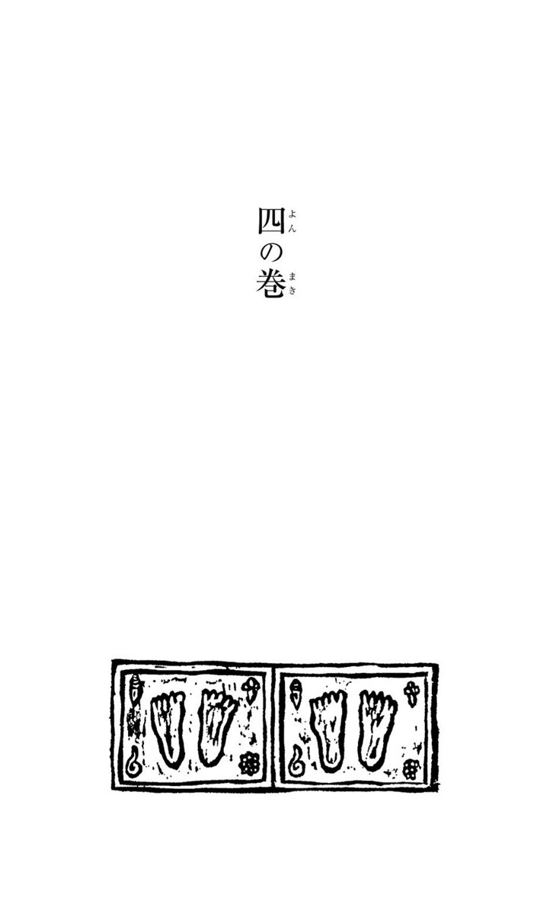
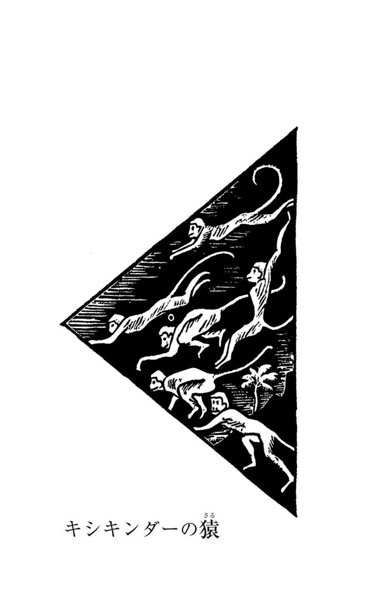
ジャターユゥの遺言にしたがって、ふたりの王子は南のほうへいそぎました。けれども、どこへいっても、もうシータの手がかりはありません。シータの身につけていたかざりなどは、どこにもおちていません。ラーマはやっとのことで、悲しみをこらえ、つよい人間になりました。シータの運命のわかったいまとなっては、悲しみにしずんでばかりもいられなかったからです。
南の山やまにのぼってから、ふたりはやっとキシキンダー（いまのマイソールあたり）につきました。山の峰は槍がつきたったように青くそびえたち、山腹には虹がぬれたようにかかっていました。すぐそばの滝はごうごうと音をたて、しぶきがおどっていました。太陽はもうしずんでいましたが、荒野は赤や紫や金いろに照りはえていました。
ふとみると、夕暮れの空のとおい峰から峰へかけて、たくさんの猿のむれがあらわれ、こちらのほうへおりてきます。人間によくにた猿がちかづいてくるのをみて、矢をはなったものか、それともあいさつしたものか、いったいどういう猿だろう、とためらいながら身がまえていると、さいわいなことに、その猿はりっぱな猿でした。ふたりの王子をたすけにやってきたのです。
「わたくしはハニュマーンともうします。あだなをパバナ・ナンダンといいます」
と、猿はいいました。
「風の神の子でございます。天かける馬車から、ひとりの女のかたが、この青いベールをおとしていきましたので、わたくしがひろっておきました。女のかたはそのとき金きりごえをあげて、こういわれたのです。
──どうか、これをふたりの王子さまにみせてください。
あなたがたのごようすをうかがいますと、猿の目にも貴いかたがただとわかります。このベールをごらんください」
「ああ、シータのベールではないか」
ふたりの兄弟は口をそろえて叫びました。
ラーマは、ベールをやさしく手にとって、猿にお礼をいいました。目には涙があふれました。
「どうもありがとう。これもあなたのおかげです。ここ数日のあいだ、妻の身につけたものがなにかおちてはいないかと、探しあるいておりました。
あのラーバナという魔王が妻をさらい、天かける馬車にのせて、どこともなくつれていったのです」
「ああ、そうですか。それであのとき、あのかたは悲鳴をあげていたのですね。そうとしったら、とびあがっていって、あの馬車を空中でつかまえ、なんとかしておすくいするのでしたのに！」
と、ハニュマーンはいいました。
「あなたは、どちらにおいでです？ みなさんは、どうしているのです」
と、ラクシマナはたずねました。
「わたくしのほかに、まだふたりの猿がこのちかくにいるのです。ひとりは太陽の神の子として有名なスグリーバで、もうひとりは知恵と学問の神ジャンバーンでございます。王位を追われているスグリーバが、わたくしどもの大将です。
わたくしどもふたり、ジャンバーンとわたくしとは大将に忠誠をささげ、スグリーバが追放にあったので、この森にいっしょにすんでいるのです。
スグリーバは親切なやさしい王なので、あなたがたを今夜、お客としておまねきしてこい、とわたくしにもうされました」
ラクシマナは猿の王のもうしでをこころよくうけました。ハニュマーンはうやうやしく王子たちを案内しました。日がすっかり暮れてしまわないうちに、ふたりはハニュマーンにともなわれて、いそいでスグリーバのところにつきました。
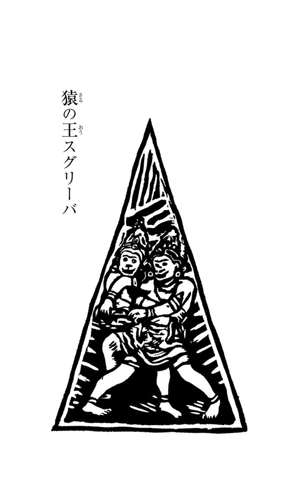
ひと晩だけと思ったのですが、王子たちは猿とすっかり仲よしになって、数日とまってしまいました。
スグリーバはうつくしいこえをした、それは気高い猿でした。頭が熊でからだだけ猿のジャンバーンは、おかしなすがたをしていましたが、なかなか頭のいい猿でした。ラーマにむかって、もうしばらくいるようにすすめながら、ある相談をもちかけてきたのも、ジャンバーンです。
「もしも、あなたがスグリーバを助けて、かれの兄のバーリから王国を奪いかえしてくださるなら、そのあとでこんどはわたくしどもが助けて、シータをラーバナから取りかえしてさしあげましょう。シータはいまどこにとらえられているか、わかったものではありません。
それでまず第一に、何千人という捜索隊を四方の国ぐにへやってさぐらなければなりません。スグリーバは自分の国をとりもどすことができたなら、よろこんで部下に捜索を命じるでしょう。
あなただけが、スグリーバを助ける腕をもっていらっしゃるのです。バーリを破ることができたら、バーリのもとでいま苦しんでいる猿の軍勢は、みんなあなたの部下になります。あなたはこの軍勢をひきつれて、ラーバナをうち破ればよいではありませんか。シータもそれですくわれることになります」
スグリーバも、ある朝自分からラーマにたのみました。
「あなたは人間です。あなたのすぐれた心と人間の知恵とで、いまこまっているわたくしをお助けください。そうしたら、わたくしはキシキンダーの王国をきっと取りもどすことができましょう。
わたくしはこのあいだまで、そこの王位についていたのですが、遠征にいって死んだものとばかり思っていた兄のバーリが、いきなりかえってきて、王位はともかく、わたくしの妻までも奪いとったのであります」
スグリーバの話をきいて、ついこのあいだ、妻をうしなったラーマは、心から深くうごかされました。
「そんなまちがったことってあるものではない」
と、ラクシマナも叫びました。
猿の王は祈るようにたのみました。
「それでは、あなたのためにたたかい、また末ながく友情をむすびましょう」
と、ラーマはこれにこたえました。
このことばをきいて、三人の猿はたいへん感激して、三人ともあつくお礼をいいました。
「それではどうぞ、わたくしどもに命令してください。必要とあれば、奪われたシータを取りかえすために、生きも死にもいたしましょう」
ラーマはいったん口にしたことは、かならず実行せずにはおきません。さっそくバーリと一戦をまじえようと、スグリーバをせきたてました。行動ははやいほうがよく、計略もたてずに、ぐずぐずしているのは、いちばん悪いことだからです。
そこで、翌日、キシキンダーめがけて出発しました。王子は猿の背なかにおぶさって、一時間に数百キロもすっとんでいきました。朝の九時ごろ、バーリが宮殿でぐっすりねむりこんでいるところを、はやくもみつけました。
赤い石の塀や、木の煉瓦でつくられている御殿をよじのぼり、王宮のそばの楽園にでると、ラーマとラクシマナをそこにのこして、三人の猿はバーリの部屋の入口に立って、名のりをあげました。ふたりの王子は大きな柳の木かげにかくれて、猿どもの異様な光景をみまもっていました。
青銅の大きなとびらがひらくと、ハニュマーンとジャンバーンは大ごえでくりかえし名のりをあげました。このこえがあたりにこだますると、黒檀の牙のように雲つくばかりのバーリがとびだしてきました。
「スグリーバ、ぼくはまっていたんだ。ひとつ、勝負をつけよう。相手にとって不足はない。さあ、こい......子猿がくるみのからを割るように、おまえの頭を割ってやる」
「おまえこそ頭を割られるな」
と、スグリーバはこれに応戦しました。
「さあ、こい！」
スグリーバはバーリにとびかかりました。
王宮のなかにいた、たくさんの猿の女たちは、これをきいて悲しそうに、おいおい泣きはじめました。
このはげしい格闘で、あたりはしんとしずまりかえり、ふたりの猿のかけごえばかりがきこえ、たがいにうらみをこめてうちあいました。火花をちらし、荒あらしく息をはずませています。
たたかいは波のようにたかまったり、しずまったりしました。スグリーバがバーリをおさえつけたかと思うと、こんどはバーリがスグリーバをふんづけました。
ふたりのからだが、はっしとぶつかると、宮殿の壁はぼろぼろくずれ、楽園の庭も汗とどろとでどろんこになりました。いつしか太陽は真うえにかがやき、正午となりました。
それでもなお、ふたりはたたかいつづけ、からだとからだとをうちつけあい、はげしい息を吐きあっていました。
ふたりの猿は憎しみのかたまりのようになり、大きな怪蛇のようにひとつにからみあって、ころげまわっているうちに、ひとりが血だらけになって立ちあがりました。それはバーリのほうで、血をたらたらとながしています。
バーリがスグリーバの首をしめようとすると、スグリーバはうなって、ラーマに助けをもとめました。
叫びごえをきくと、ラーマはすぐ木かげからとびだし、雷の牙といわれる「バジュラダンダ」という投げ槍を投げつけました。槍は空をきって、あっと思うまに、バーリをつきたおしてしまいました。バーリはばたりとたおれて、苦しそうに悲鳴をあげていいました。
「おれはだまし討ちにされたのだ」
スグリーバは立ちあがって、死にかけた兄のうえに、がばっと馬のりになりました。すると、このときバーリの妻ターラーのなげき悲しむ悲鳴がきこえました。
ターラーはバーリの死をしると、すっくと立ちあがって、夫をころしたラーマに面とむかっていいました。
「どうしてかげからいきなり槍を投げたりしたのです。ごらんなさい、槍はバーリの背なかをつきとおし、尖が胸までつきぬけているではありませんか。なんというひきょうなことをしたのです。
あなたは正義をおもんずる、猿よりもすぐれている人間ではありませんか。人間としての恥をしりなさい。わたくしはあなたに呪いをかけます。心を傷つけられた女の呪いをかけます」
この呪いはラーマの心につきささりました。
「悪かった。どうか、そんな呪いをかけないでください」
「いいえ、もうとりかえしはつきません」
と、ターラーはため息をついていいました。
「傷ついた女の心がかけた呪いは、けっして消えることはないでしょう。あなたはお妃をとりもどすことができても、もうシータをよろこばせることはできません」
ターラーはこういって、亡き夫の頭をかきいだいたまま、七日のあいだ、いたみ悲しみました。
この七日のあいだ、ラーマの心は、まるで胡蜂の巣のなかにいるような思いでした。
「どうして、バーリにどうどうと名のりをあげなかったんだろう。いきなりバジュラダンダの槍を投げるなんて、ぼくもどうかしていた。ああ、シータ、いまどこにいるのか？ いまになって後悔に苦しんでいる自分の心をすくってくれるのは、おまえだけなのだ。おまえがいてさえくれたら......」
ラクシマナはラーマをなぐさめようとしましたが、ことばではいうことができません。兄の苦しさをやわらげようと、いろいろつとめましたが、心ではやはりおなじことを考えていたのです。
「ひきょうにもかげからこっそり攻めたのだから、罪な行ないを心から後悔して、洗いきよめなければならないのだ」
人間にも猿にもあるまじきことをしたという、ふたりの後悔の念は、とてもここに書きあらわすことはできません。自分で自分をせめさいなんでいました。
「あのダンダカーの小屋で、シータのひどいことばをがまんして、いくら侮じょくされてもシータのそばをはなれなかったら、まさかこんなことにはならなかったにちがいない。悪いのは、ラクシマナ、おまえなのだ。おまえの傷つけられたほこりのためだ」
しかし、やがてときはすべてをやわらげ、またふたりの兄弟の後悔をもしずめてくれました。それにスグリーバの戴冠式があったり、バーリの子アンガダをあとつぎにするというおごそかな式があったり、そのほか、さまざまな国の政治に、ラーマもラクシマナもいそがしくはたらきました。ふたりは自分たちのことを考えるひまもほとんどなかったのです。
やっと、すべての努力が実をむすんだように思われたので、スグリーバは戴冠式のあとで、一カ月にわたるお祭りを命じました。ターラーとハニュマーンとアンガダをのぞくすべての猿は、みんなこのお祭りさわぎに加わりました。
ハニュマーンとアンガダは、ちかくのいおりでお祈りにすごしているラーマとラクシマナの仲間にはいりました。
二週間ばかりすぎたころ、ジャンバーンは熊のようにぶつぶついいながら、いおりにやってきました。
「王国はあんまりしあわせすぎて、悪いことでもおきなければいいが......だれもかれもあんまりはしゃぎすぎて、どうしてこうも愉快なのかわからなくなってきました。
──ラーマ、この馬鹿さわぎがおわったら、シータをみんなで探しにいくことになりましょう。そうしたら、きっと苦しいおそろしい目にあうことでしょう。
そのために、いまの馬鹿さわぎからすっかりからだも心もきよめておこうと思います。いっしょにお祈りの仲間にいれてください。あんまり度のすぎたたのしみは、人にも猿にもよくありません」
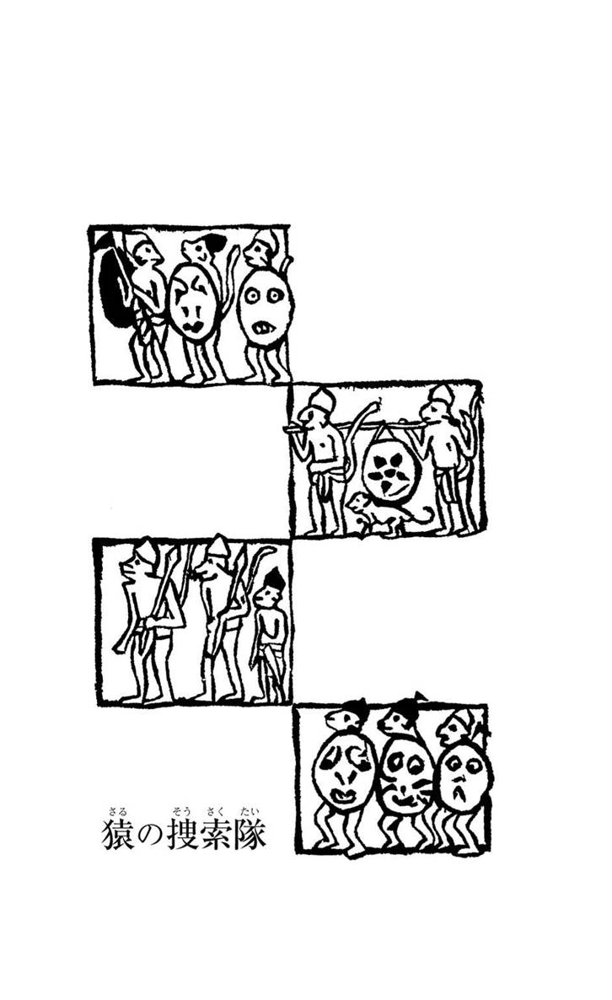
ひと月ばかりすぎてから、ラーマは勇をふるってスグリーバに相談しました。
「猿の王よ。こう、うかうかと大事な月日を遊び暮らしていて、いいのでしょうか」
すると、スグリーバはこたえました。
「もう一カ月だけ、お祭りをつづけさせてください」
しかし、こんど顧問官となった賢者のジャンバーンは、それに反対しました。
「おそれながら、王さま。わたくしどもは六週間まえ、ラーマにちかったではありませんか。シータの居所を探すために猿の軍勢をさっそくつかわすようにお願いいたします。わたくしどもはもうこれ以上、歓楽に溺れているわけにはまいりません」
スグリーバはしばらく考えこんでいましたが、やがて皇太子のアンガダの意見をもとめました。アンガダは若かったので、さっきから意見をのべたくてむずむずしていたのです。
「わたくしはいまから捜索隊をひきつれていきたいと思います。いつまでも、ここにぐずぐずしていたくありません。それに一軍を統率できるかどうか、ひとつ自分の腕もためしてみたく思います」
「皇太子さま！ おっしゃるとおりです」
と、いならんだ人びとは口をそろえて叫びました。
そこで、ハニュマーンがこういいました。
「皇太子さまのおっしゃるとおりです。わたくしは皇太子さまのいくところなら、どこまでもおともいたします」
国王はやっと口をひらきました。
「ラーマとラクシマナのご兄弟、おたがいに約束したことのうちで、あなたがたのほうはそれをはたされました。こんどは、わたくしのほうがはたさなければなりません。あしたになったら、アンガダとハニュマーンとに一万の猿をひきつれさせて、南のほうへ出発させることにいたしましょう。世界のすみずみまでよく探して、シータをつれもどすことができたら、どんなによいかと思います。
またもし、シータをつれてかえってくることができなかったとしても、シータのたよりになる消息がわかるかもしれません。あなたのお妃をみつけたときの用意に、ハニュマーンに指輪かなにかをおあたえになってください」
りりしいハニュマーンは、ラーマの指輪を身につけて、アンガダといっしょに外濠にいき、一万の猿をよせあつめました。
翌日、太陽ののぼるころ、四つにわかれた捜索隊は四方にむかって、それぞれ出発しました。猿の軍勢は、いきなり雲のなかにとびこむと、あたりは真夜中のようにまっ暗になりました。さいわいなことに、あつい雲がそれをつつんでくれたのです。
雲のような猿の大軍が、すっかりすがたをかくしてしまうと、太陽の神はもとのように小川や野原を照らしました。
ラーマとラクシマナはまたもいおりにもどって、雨のふる季節のあいだお祈りにすごしました。四方にわかれた軍勢は、それぞれめざしたところへつきました。西にむかった捜索隊はアラビヤ海に到着し、東にむかった一隊はベンガル湾にでました。
北にむかった一隊はヒマラヤ山の雪をいただいたけわしい峰までいって、とまってしまいました。そこからは、ただ星へいくひとすじの道があるだけです。
この三方の捜索隊はシータの足跡をみつけることができませんでした。
アンガダのひきいた一隊だけが、どうやらちょっとした事件にあって、元気づきました。木から木へとびうつって、ラーマ山（いまのラメスワラ山）のちかくにあるたかい峰の南側にでたとき、あのたかのジャターユゥの兄、サンパーチーにばったりであったのです。
サンパーチーはくじゃくいろの山のうえにとまって、とおくのほうをきっとなってにらんでいました。目は夕方の月のように大きくみひらかれ、羽は日の出の太陽のようにきらきらと金いろにかがやき、いなずまのようにするどいくちばしをつきだしていました。
くろい爪はくじゃくいろの峰をしっかりとつかまえ、まるで虎が牛の首にかじりついているようにみえました。
猿の大群がいなごのように、空からうようよむらがってあらわれるのをみると、たかは歯をがたがたとふるわせて羽ばたきました。アンガダもハニュマーンも、サンパーチーのおそろしい武者ぶるいをきいて、非常にびっくりしました。
ふたりはたかによびかけました。
「わたくしたちは、ラーマのお妃のシータを探しているところです......」
「ああ、そうですか。こちらへおいでください」
と、たかは叫びました。
猿の軍勢はぞくぞくとたかのまわりにやってきて、家来のようにひかえました。いちばんあとにいた、アンガダとハニュマーンがまえにでて、あらためてサンパーチーにあいさつしました。
「これは、ようこそ」
マンモースのように大きなからだをした鳥は、ふたりにむかっていいました。
「ラーマがどうかなさったのですか？」
猿たちのくさぐさの話をききおわると、たかは思わず心がふるいたちました。
「ラーバナはわたくしの弟ジャターユゥを切りころしてから、ついこのあいだのこと、馬車でこのそばをとんでいきました。シータは馬車のなかにしばられていました。わたくしに助けをもとめ、悪魔の手からにがしてくれと叫びましたが、それを目にしながら、わたくしは立ちあがることもできなかったのです。
シータはわたくしをふるいたたせようと思ったにちがいありません。弟のジャターユゥがラーバナの手にかかってころされたことを話してくれました。そのときのわたくしの心の苦しさは、どんなだったでしょう！ 弟をころしたやつがすぐそばをとおりすぎるのに、仇をうつことさえできなかったのです」
たかは悲しさのあまり、涙をはらはらとながしました。
「どうしてとびかかって、悪魔をやつざきにしてやらなかったのです」
アンガダはふんがいしました。
「あ、あなたはご存じないのですね。わたくしは太陽に翼を奪われてしまったのです」
「えっ、すこしもしりませんでした」
と、猿たちは口をそろえていいました。
ただひとりこのことをしっていたハニュマーンは、たかにむかっていいました。
「ごめんなさい。サンパーチー、みんなが太陽とたか族とのたたかいをしらないのは、むりもありません。わたくしが悪いのです。太陽がねたんで、どうしてあなたの翼をとったのか、みんなに話してやってください」
「では、お話ししましょう。気をまわさずにきいてください。
まだ英雄だけがこの地上をあるいていた神代のころのことでした。四羽のたかが空をわがもの顔にとびまわっていました。それはわたくしの両親の親たかと、その子のジャターユゥとサンパーチーのこのわたくしでした。
両親はだんだん年をとってしまって、父親の心にはもう生きる望みもすくなくなったので、できるだけ天かけて死にたいといいだしました。そこで、父は太陽のちかくまで舞いあがっていって、もうすこしで太陽の神よりうえにあがるところでした。
このとき、突然、父親は石のようにおちはじめ、深い井戸のなかにおちてしまったのです。翼はからだにぴったりくっついてしまって、一片の羽もひらかず、つい落をとめることができませんでした。
母親は、このわけのわからぬ奇妙なつい落をみると、おそろしさのあまり悲鳴をあげ、ふたりの息子をヒマラヤ山のねぐらによびよせました。ふたりのこどもが、雪をいただいた峰のねぐらについたとき、母親は泣きやんで、じっとしずかに寝ていなさい、といっただけでした。
それからしばらくしたある日のこと、弟のジャターユゥは太陽のほうへとんでいきました。母親は兄のわたくしにむかって、ついてくるようにいいました。わたくしたちはある一定の距離をたもって、下のほうへとんでいきましたが、母がわたくしにいうことばは、よくきこえても、うえのほうにいる弟にはきこえません。
──サンパーチー
と、母親はいいました。
──わたくしが死んだあとは、どうかジャターユゥのめんどうをみておくれ。約束してください。おまえたちのおとうさんが、どうしてころされたかしっていますか？ あの太陽がころしたんです。おとうさんが、もうちょっとで太陽の頭のうえに舞いあがろうとしたとき、太陽の神はねたんで、いきなり、火の矢をおとうさんになげつけたのです......
母親はわっと泣きくずれるのでした。
──ごらん、ああ、ジャターユゥはもうあんなに太陽のそばへいってしまった......ジャターユゥ、おりていらっしゃい。いい子だね。はやく！ あ、なんという子でしょう。
けれども、弟はすこしもいうことをききません。母は最後の力をしぼって、むてっぽうなわが子のうえに舞いあがりました。すると、どうでしょう。あっと思うまに、太陽はまたも、あのおそろしい火の矢を射ったのです。
矢は母の心臓をつらぬきました。このときジャターユゥは、母がみるみるつい落していきながら、まっ赤な血をぎらぎらとながして、太陽をきっとにらみつけているのを、みました。
ジャターユゥは母のあとを追いましたが、母の翼はからだにまきついてしまって、どんどんおちていきます。下にいたわたくしのそばをかすめ、まっ白な丘や、しゅろの木をかすめ、ガンジス河の青いながれのなかにおちてしまいました。
その夜はねぐらにかえって、ただ悲しさにくれるばかりでした。このとき、わたくしはジャターユゥに約束させたのです。
──けっしてもう太陽にはちかよらない、とちかわせました。
ジャターユゥのめんどうをみたり、教育することは、とてもわたくしにはできそうにも思われませんでした。それでも母にした約束を守って、弟のめんどうをこまごまとみてやりましたが、ジャターユゥは火のようなはげしい心をもっていて、なかなか勇敢でした。
両親の一周忌がすぎたかと思うと、ジャターユゥは太陽のところへとんでいかせてくれと、せがんでききません。とうとう、ある日こういいだしました。
──兄さんはぼくをねたんでいるのでしょう。自分で太陽のところまでとんでいけないものだから、ぼくがとんでいこうとするのをじゃまするんですね。
これをきいて、わたくしがどういう気がしたか、よくおわかりのことと思います。
わたくしは弟にいいました。
──そんなことをいうなら、あすになったら、太陽のところへのぼっていこう。しかし、それにはひとつちゃんと約束しておくれ。おまえといっしょにわたくしもいくのだ。
翌朝、まだ日がのぼらないうちに、ねぐらのガーリ・シャンカ（いまのエベレスト山）から、空へ舞いあがり、夜の明けないうちに、もう月のつめたい絶壁までものぼり、むかしながらのうつくしい星のいただきのうえに舞いあがりました。
やがて太陽がのぼりはじめ、わたくしたちふたりの兄弟をみると、大いそぎでえらそうに青空とおくのぼっていきます。世界は黄金いろにあかるくかがやきました。
もし太陽がほかのものから、ひとたび高慢の鼻をへしおられたら、きっとだれをもころす力がなくなるにちがいありません。
すい星が下のほうで小さなガラス玉のようにころがっていました。大きな星もいまでは下の空をおよいでいます。わたくしたちふたりはなおもぐんぐん舞いあがりました。
......ジャターユゥはもうすこしで空のいちばんたかいところへとどくところでした。太陽はいつもそこで、しばらくのあいだかならず休むのです。わたくしはまだ太陽の下をとんでいました。
太陽の神は腹を立てていたのでしょう。ぐんぐんのぼり、午前がまたたくまにすぎてしまいました。太陽はうえへうえへとかけあがっていきます。
ジャターユゥが空のいちばんたかい絶頂へ、とどいたかと思うと、この瞬間、わたくしは火の矢が空をつらぬいてとんでくるのをみました。矢はますます弟にちかづきます。運よくわたくしはとんでいく矢のすぐそばにおりました。
びっくりしたわたくしは、大ごえをたて、いきどおりながら、母が、まえにしたことを思いだし、ころげるようになって、ぱっと翼をいっぱいにひろげました。こうして、太陽の矢から弟をかばったのです。
あっと思うまに、わたくしのからだはぐんとつきとばされ、くるくると舞い、大きな音をたててころげはじめました。
でも、わたくしは両親よりも用心していたので、どうやら死なずにすみました。ただ翼が役にたたなくなっただけです。いまでは、太陽も高慢の鼻をへしおられたとみえて、もう焼きころす力もなくなりました。それで、さっさとでて、さっさとしずむようになったのです。
わたくしたち兄弟は、ぐんぐん石がおちるように舞いおりて、かずかずの峰をとおりすぎ、やがて地上に舞いおりると、いままでたかい空からはすこしもみえなかった人間や牛が四方からあつまってきて、わたくしたちふたりをとりまきました。
ああ、なんと下まで投げとばされてしまったことでしょう！ かつてはヒマラヤの山頂にすんでいたものも、夜になると狐がうろつき狼がほえる下界に、かくれ家をもとめなければならなくなったのです。けれども太陽の高慢な鼻をへしおったわたくしたちは幸福でした。
最後に、この河のほとりにきたのです。わたくしはもえているからだで、すぐさま、この河のつめたいながれにとびこみました。
わたくしは死にはしませんでしたけれど、もう二度とふたたび、とぶことはできなくなりました。ジャターユゥもはじめて、両親やわたくしがつぎつぎに、どうしてつい落したかということをしりました。太陽の仕業だったということをやっとさとったのです。
わたくしはそれからなん百年ものあいだ、ここで空や森をながめながら暮らしてきたのです。それで、いつかとおくのほうまで、はっきりみすかすことが、できるようになりました。ラーバナはシータを馬車にのせ、ランカへつれていったにちがいありません。はっきりみたのです。わたくしの話もこれでおしまいですが、わたくしの一生ももうおわりです。これ以上生きようとも思いません」
サンパーチーはこう語りおわると、息もたえだえになりました。
ハニュマーンは、そのようすにおどろいて、よびかけました。
「空の王者、お疲れになったのではないですか」
「いいえ。いよいよ、わたくしの最期がきたのです」
と、たかはいいました。
「弟のジャターユゥが死んでからというもの、生きる力もだんだん消えてまいりました。いま、ぜひおしらせしたいことがあります。
──これで、わたくしも最後にラーマのお役にたつことになりましょう。よく耳をすましてきいてください。子猿どものおしゃべりをやめさせてください。あの峰のむこうに海があります。その海をこえるとランカの島です。ラーバナはシータをさらって、そこへとんでいったのです。わたくしが死んだらさっそく火葬にしてください。葬式で手まどり、ぐずぐずしていてはいけません。
──ほら、むこうにダイヤモンドのように、きらきら光っている山があるでしょう。あの南の山をさっさととびこえていきなさい。そのふもとから海がひろがっています。海をわたれば、そこがランカで、シータはそこにとらわれているのです」
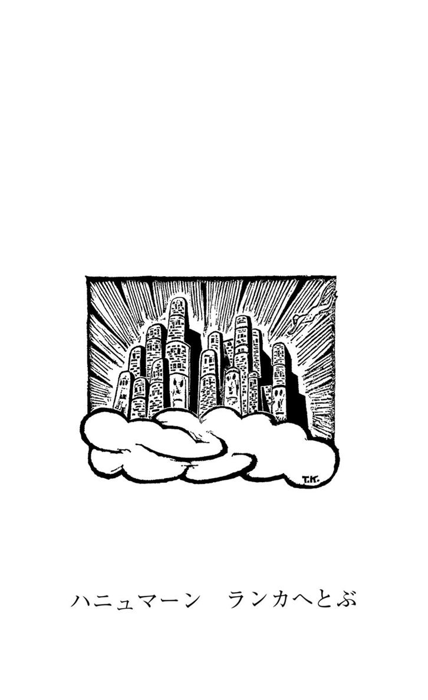
サンパーチーの葬式をすませてから、猿の軍勢はラーマ峰というところにのぼって、とおくみわたすと、まだ一度もみたこともない浜辺が目にはいりました。ハニュマーンのほかには、だれも海などみたものはなく、せいぜい村里の川とか湖ぐらいしかしりませんでした。
いま、とつぜん、目のまえにきらきらかがやく青い海原があらわれたのです。山のような波がいくえにもかさなり、あわだつ波頭がそびえ、とおくまで白いしぶきがつらなっています。猿の軍勢はすっかりおびえてしまいました。
象牙のような白い浜辺に、青い波がどうどうとよせてくると、猿はこわがって、まるでこどものようにぶるぶるふるえました。だれもかれも壮大な海を目のまえにして、一日じゅうだまりこくって、とおくのほうばかりみていました。
やっと海になれてくると、猿たちはラーマ峰のふもとで作戦会議をひらきました。海をわたる相談になると、どうしてよいやらさっぱりわからず、みんなもじもじしてしまいます。猿の軍勢は海がこわかったのです。
およぎ方をしらなかったばかりでなく、インド洋にはふかだとか海竜などがいっぱいいて、猿はなかなか歯ごたえのあるうまい動物だ、とつけねらわれてもいたのです。考えただけでも、こわくてしょうがありません。
夜昼、会議をひらいても、なにひとつまとまりません。
そのうちに、五月の雲が南のほうから頭をもたげてくるのがみえました。これは雨の季節がまぢかにせまった合図です。さあ、いっこくもはやく、インドとセイロン島とのあいだに、つき破ることのできない雲の壁ができないうちに、なんとかしなければなりません。
猿の軍勢がざわざわ、さわぐのをみて、アンガダは大ごえできっぱりいいました。
「キシキンダーの民よ。わたくしはこの海をのりこえていきたいと思う。わが種族の名誉を守ってもらいたい」
ハニュマーンはいつもだまっていましたが、このとき口をひらきました。
「いいえ、それはいけません。王子さま、あなたはこれから先も司令官でいなければなりません。そんなあぶないことに命をかけてはなりません。どうか、先にわたくしをやってください」
ハニュマーンは自分の戦略を説明しはじめました。
「まずはじめに、わたくしがまいりましょう。一週間のうちに、もどってこなかったら、追いかけてきてください。ラーマはわたくしに指輪をあずけてよこしました。わたくしがインド洋をわたれると思ったからにちがいありません。しかし、あの悪魔どもにみつけられたら、わたくしもかえるにかえれなくなります。
王子さま、わたくしを助けにきていただくことになるかもしれません。お約束しておきますが、わたくしはすくなくとも一週間はきっと生きております。あすになったら、わたくしをやってください」
太陽が海の波を赤く、きらきらとそめるまえに、風の神の子ハニュマーンは、はやくも空へとびあがりました。浜辺は、たちまちとおくなって、象牙の刃のように細ながくのび、巨人のもじゃもじゃ頭のような岩やがけも小さくなって、松の葉のようにみえました。
ハニュマーンはなおもたかくのぼって、あちらこちらと眺めました。さかまく波のほかになにひとつみえず、おそろしいふかや竜が頭をつきだして、とおくからハニュマーンをにらんでいます。剣のように大きな歯をあらわしながら、口をぱくぱくあけているのです。ハニュマーンはぞっとしてからだがふるえました。南のほうへいそいでからだをむけながら、目をかたくとじました。
「どうか、はやく陸地へつきますように」
ハニュマーンは祈るように、ひとりごとをいいました。
「そうしたら、あんなおそろしい海の動物をみないですむだろう」
まだ夜も明けないのに、ハニュマーンはずいぶんとおくまでとんでいたので、仲間の猿はだれひとりかれのすがたをみませんでした。ハニュマーンがそっと目をあけてみると、太陽が左手のほうにのぼりかけていて、海からちょっと顔をだし、黄金の山のように、きらきらとうつくしく光っていました。
ハニュマーンはなん時間もなん時間もとんでいきましたが、ラーバナの都は影もかたちもみえません。もうすっかり力がつきて、あやうく海にひきずりこまれそうになりました。
日はとっぷりと暮れて、赤い空も消えてしまいました。いまにも海におちそうになりましたが、下のほうでふかが歯をがたがたふるわせているではありませんか。やっと正気にかえると、目をつむってとびあがりました。
ふたたび、そっと目をあけてみると、どうでしょう。目のまえに、ランカのダイヤモンドの塔が、ヒマラヤ山のようにたかくそびえたち、それはそれはさんぜんとかがやいています。ここだけは夜になっても、昼のようにあかるかったのです。
「ラーマ、ラーマ」
ハニュマーンは大ごえで叫びながら、なおもすっとんで、ダイヤモンドの塔のそばの砂地に、ふわりととびおりました。海のとおいかなたでは、夢をさますように、波の音がどうどうとこだましていました。
【著者略歴】
河田清史 （かわだ・きよし）
１９０９年 東京に生まれる
１９３５年 東京大学文学部卒業
１９９１年 逝去
主な作品 「象とさるとバラモンと」
「モォリス・ラヴェル」
「太陽の東・月の西」
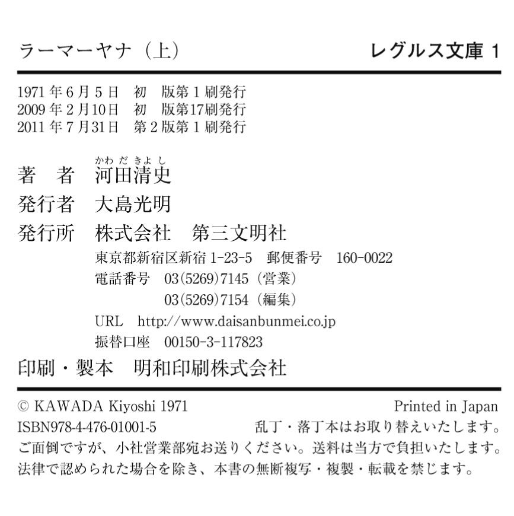
レグルス文庫について
レグルス文庫〈Regulus Library〉は、星の名前にちなんでいる。厳しい冬も終わりを告げ、春が訪れると、力づよい足どりで東の空を駆けのぼるような形で、獅子座〈Leo〉があらわれる。その中でひときわ明るく輝くのが、このα星のレグルスである。レグルスは、アラビア名で〝小さな王さま〟を意味する。一等星の少ない春の空、たったひとつ黄道上に位置する星である。決して深い理由があって、レグルス文庫と名づけたわけではない。ただ、この文庫に収蔵される一冊一冊の本が、人間精神に豊潤な英知を回復するための〝希望の星〟であってほしいという願いからである。
都会の夜空は、スモッグのために星もほとんど見ることができない。それは、現代文明に、希望の冴えた光が失われつつあることを象徴的に物語っているかのようだ。誤りなき航路を見定めるためには、現代人は星の光を見失ってはならない。だが、それは決して遠きかなたにあるのではない。人類の運命の星は、一人ひとりの心の中にあると信じたい。心の中のスモッグをとり払うことから、私達の作業は始められなければならない。
現代は、幾多の識者によって未曽有の転換期であることが指摘されている。しかし、その表現さえ、空虚な響きをもつ昨今である。むしろ、人類の生か死かを分かつ絶壁の上にあるといった切実感が、人々の心を支配している。この冷厳な現実には目を閉ざすべきではない。まず足元をしっかりと見定めよう。眼下にはニヒリズムの深淵が口をあけ、上には権力の壁が迫り、あたりが欲望の霧につつまれ目をおおうとも、正気をとり戻して、たしかな第一歩を踏み出さなくてはならない。レグルス文庫を世に問うゆえんもここにある。
一九七一年五月
第三文明社
書名 ラーマーヤナ（上）
著者名 河田清史
発行者名 大島光明
発行 株式会社 第三文明社
〒１６０‐００２２
東京都新宿区新宿１‐23‐５
ＵＲＬ http://www.daisanbunmei.co.jp/
電話 ０３‐５２６９‐７１４５
著作権 (c)KAWADA Kiyoshi
電子書籍発行日 ２０１３年10月30日
電子書籍制作日 ２０１３年10月15日
電子書籍制作会社 図書印刷株式会社
底本 ２０１１年７月31日発行 第２版第１刷
法律で認められた場合を除き、本作品の全部または一部を無断で複製、転載、改竄、公衆送信すること、および有償無償にかかわらず、本データを第三者に譲渡することを禁じます。